1.Introduction
The new, third-generation SAM 940+ meets the increasing demand for portability with a lightweight (1.2 kg) unit that sacrifices neither speed nor quality of radionuclide identification. It is also designed to meet the requirements of ANSI 42.34 criteria for hand-held instruments.
Nucare's decades-long experience in innovative RIID design drives a RIID that leverages the most advanced technologies available to deliver features such as: (a) source-less auto-stabilization; (b) real-time reach-back; (c) detachable external probes. Features such as a high-resolution camera, multi-channel GPS, gyro sensor, and a hot-swappable battery pack complete a state-of-the-art unit.
The features of this new design assure the user of excellent performance that exceeds the demanding requirements of Homeland Security in the USA and beyond.
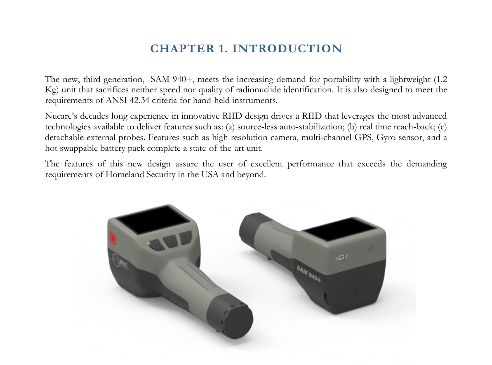
1.1. SAM 940+ Evolution
The 3rd generation SAM 940+ is the most compact and lightweight hand-held RIID product ever produced. Volume and weight are a third less than previous models, and yet advanced features such as multi-media support are included.
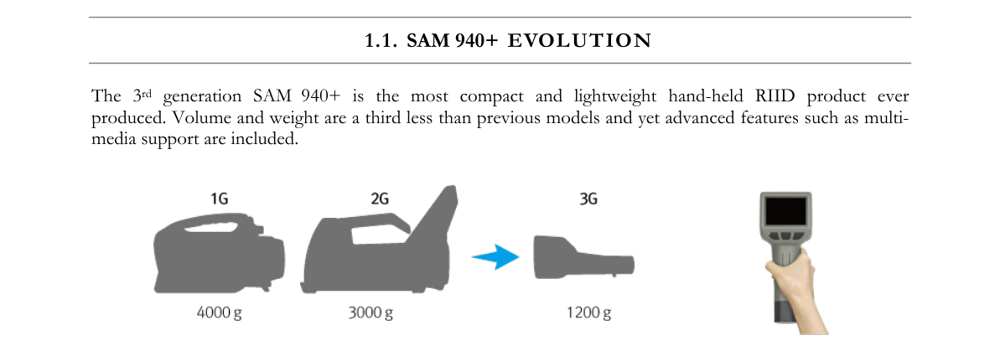
1.2. Important Safety Information
The SAM 940+ has been meticulously engineered to provide safe, dependable, high performance for years. As with any kind of electrical equipment, following instructions and taking basic precautions will prevent harm to the operator and to the equipment. Prior to using this equipment you should:
- Read and understand this manual thoroughly, especially the chapter on safety (Chapter 2).
- Read and understand thoroughly all warning labels on the equipment.
- Store all documents provided with the equipment in a safe place for future reference.
1.3. Product Warranty
Description of the Nucare, Inc. warranty for the SAM 940+ handheld RIID systems:
- The unit is warranted to be free of defects in material and workmanship, including: parts, labor and all unit elements.
- Unless otherwise indicated, the warranty is good for 12 months after delivery to the original buyer only.
1.4. Notification of Copyright
The software in this device is protected by copyright laws and international treaty. You must treat the software like any other copyrighted material. Copyright laws prohibit making additional copies of the software for any reason other than specifically described in this manual. You may not copy the written materials accompanying the product without prior written consent from Nucare Inc.
2.Safety
2.1. Cautions and Notes
The following warnings and instructions are vital to the optimal operation of the SAM 940+ unit and should be made readily accessible for reference. Follow these warnings and instructions thoroughly to use the unit correctly and to protect the safety of the users.
Handling Instructions
- The maintenance service of the unit should only be handled by qualified/trained personnel.
- Cleaning the camera and flash lamp windows: clean the windows with a soft, moist cloth to keep them clean and clear. Turn off the power before cleaning.
Safety Hazard Warnings
Disposal Instructions
- If/when disposing of the unit: observe local and national regulations for the disposal of units containing a lithium battery.
- Do not use household or municipal waste collection services for disposal of electrical and electronic equipment. EU countries require the use of separate recycling collection services.
2.2. Classification
- EMC: Complies with EN 61326-1:2013, EN 301 489-1 V1.9.2 and EN 301 489-17 V2.2.1.
- FCC Class: Class B Equipment (FCC CFR 47 part 15 subpart B, Section 15.101).
- Laser: Class II Equipment (Max. output < 1 mW, Wavelength 650–660 nm).
- Degree of protection against electric shock: Type BF Applied Part.
- Degree of protection against the ingress of water: IP65.
- Equipment not suitable for use in the presence of a flammable anesthetic mixture with air or with oxygen or nitrous oxide.
2.3. Labels
The label providing the manufacturer information and serial number of the system is located on the bottom of the unit (Figure 2.3.1).
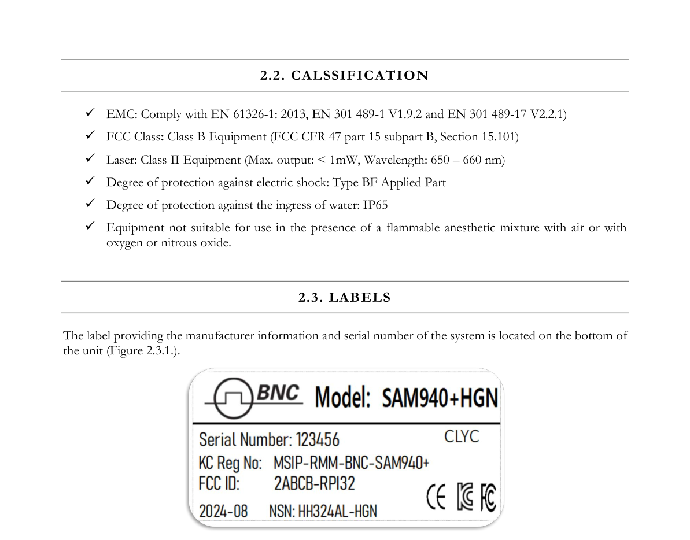
3.System Description
3.1. System Components
The physical components of the SAM 940+ are listed in Figure 3.1.1. The two software programs used with the SAM 940+ are described in Chapters 4 and 7. Also included are USB cables with universal adaptors for charging the battery and connecting the SAM 940+ to a PC. A heavy-duty carrying case and SAM 940+ components packaged in the custom-made sponge foam of the carrying case are shown in Figure 3.1.2.
| ① | Gamma detector |
| ② | LCD display |
| ③ | Neutron detector (optional) |
| ④ | Replaceable battery pack |
| ⑤ | AA battery holder |
| ⑥ | Universal adaptor |
| ⑦ | Belt holster |
| ⑧ | Camera |
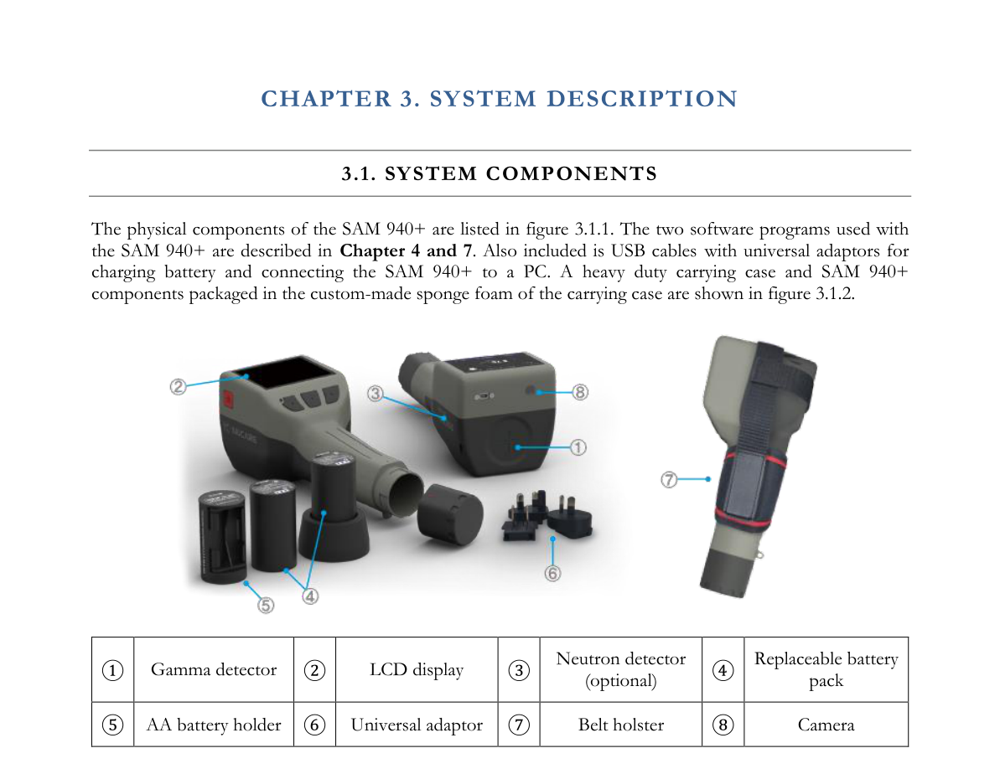
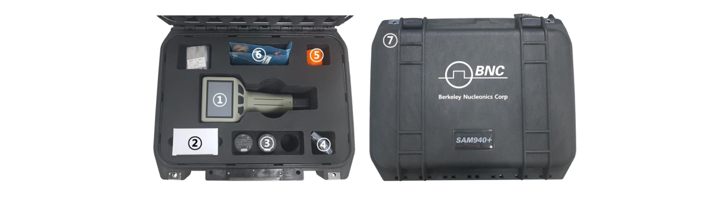
The carrying case contains:
- ① RAD IQ™ SAM 940+ detector unit
- ② Universal power adaptor for RAD IQ™ SAM 940+
- ③ Replaceable battery pack (2 ea.) and emergency AA battery holder (1 ea.)
- ④ OTG communication USB cable
- ⑤ USB cable for battery charge
- ⑥ Belt holster, hand strap and battery charger
- ⑦ Heavy-duty carrying case
3.2. High Resolution Camera
Multi-media support is one of the distinctive features of the SAM 940+. Having visual information of sites and target objects greatly improves event review. The SAM 940+ is equipped with a built-in camera (CMOS 8M pixel) module for recording media information that can be attached along with spectroscopic data.
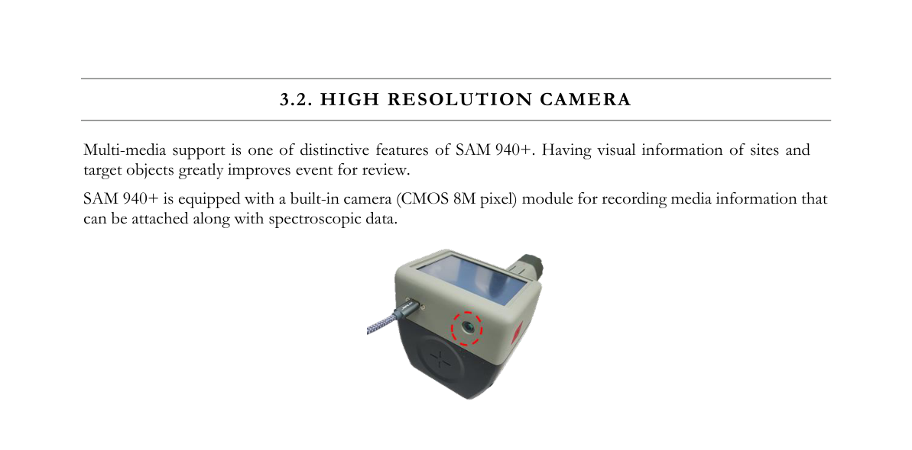
The camera lens is located as shown in Figure 3.2.1 (red circle). The lens is water protected by a special optical cover. Keep the optical cover as clean as possible.
3.3. Belt Holster and Hand Strap
The compact and lightweight design enables easy transport of the SAM 940+ in a belt holster. The belt holster is designed to allow monitoring of the SAM 940+ display while wearing it. The waist strap prevents the SAM 940+ from slipping out of your hand.
3.4. Power and Battery Charge Guide
There are several ways to charge the SAM 940+ battery pack. The most effective ways are using the dedicated charger station provided or using a USB cable directly to the battery. A full charge may take up to 3–4 hours for each battery.
3.4.1. Remove/Insert a battery from/to the SAM 940+
The SAM 940+ provides two rechargeable batteries. Following are instructions for removing/inserting the battery from/to the SAM 940+ unit.
3.4.1.1. Opening the end cap and removing the battery.
- Twist the end cap clockwise and take out the end cap (Figure 3.4.1).
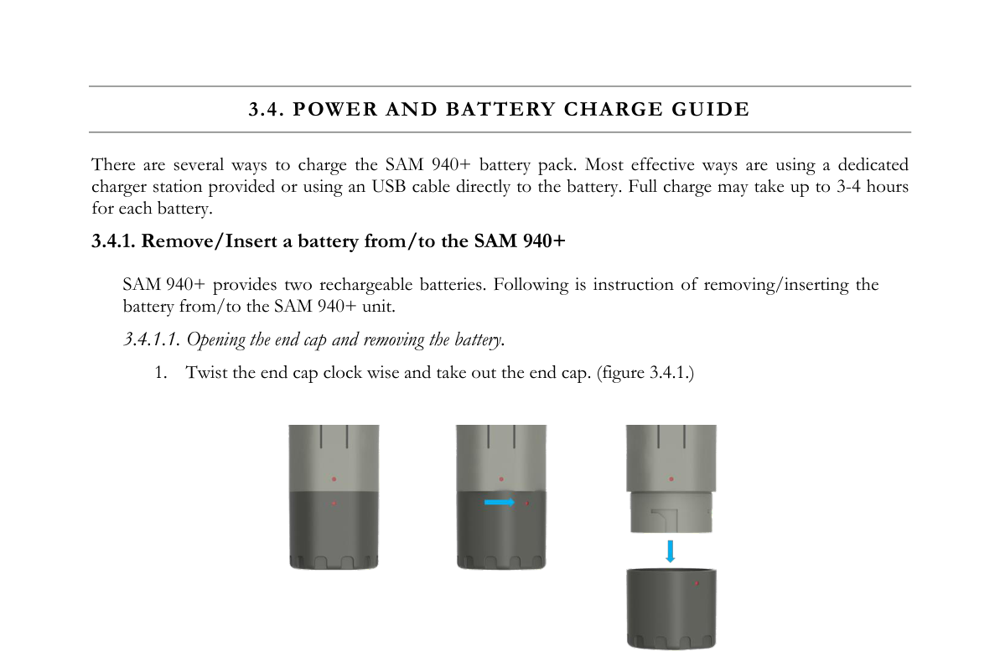
- Tilt down the SAM 940+. The battery will slide out by gravity.
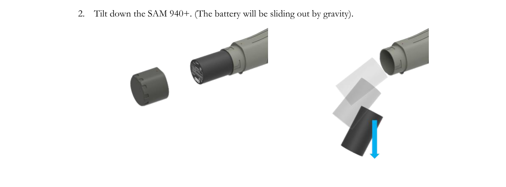
3.4.1.2. Inserting the battery and closing the end cap.
- Insert the battery as shown in Figure 3.4.3 (LED side is down).
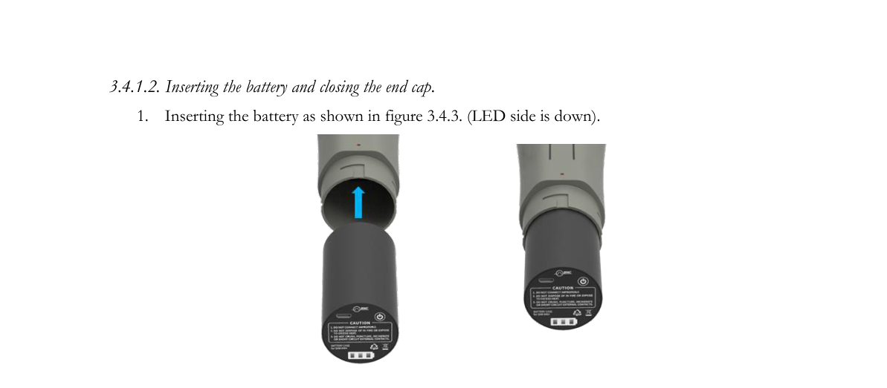
- Close the cap by twisting counter-clockwise. The two red dots should be aligned (Figure 3.4.4).
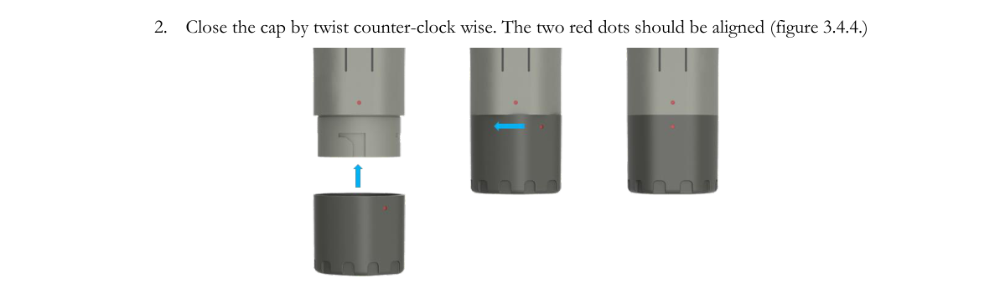
3.4.2. Directly charge the battery
The swappable battery has a micro 5-pin USB port and battery status indicator LEDs. Using the port, the battery can be charged independently. The battery indicator LED shows the level of charging status when the LED power button is pressed.
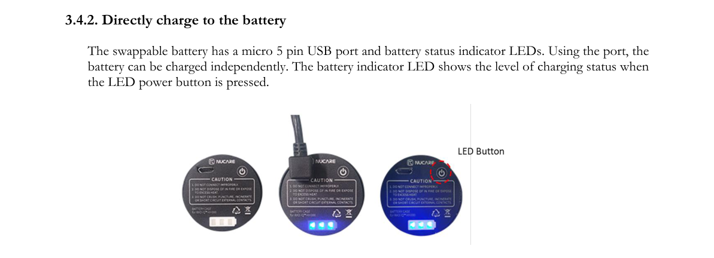
The SAM 940+ battery has a built-in power protection circuit (PCM) which prevents the battery from both overcharging and over-discharging. The battery power indicator LEDs are turned on sequentially. All three LEDs are turned on when it is fully charged, as shown in Figure 3.4.5.
3.4.3. Charging the battery using a dedicated charge station
The SAM 940+ comes with a dedicated battery charge station as shown in Figure 3.4.6. The battery can be docked into the station at any azimuth angle. No alignment is needed. The battery has a smart contact design that enables docking the battery into the charge station without concern about alignment.
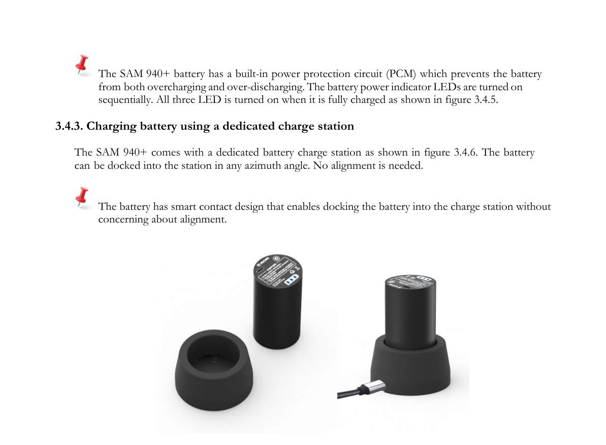
3.4.4. Charge through the SAM 940+
The battery can be charged without taking the battery out from the unit using the mini 5-pin USB port on the front face of the SAM 940+ as shown in Figure 3.4.7.
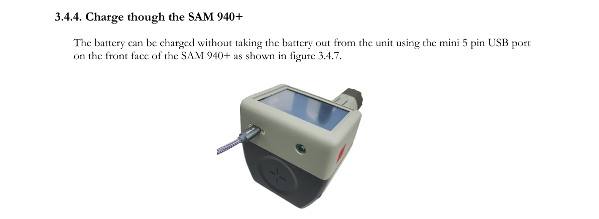
The SAM 940+ comes with two different USB cables, i.e., micro 5-pin and mini 5-pin, as shown in Figure 3.4.8. Be aware of the difference and use an appropriate cable. The micro USB cable is for charging the battery and the mini USB is for communication between the SAM 940+ and a PC.
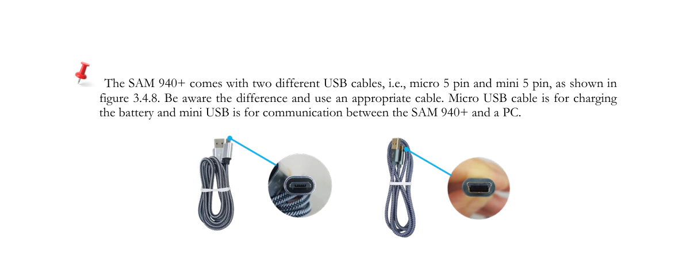
The charging time might be longer than other methods if the unit is turned ON, consuming power for operation or stand-by.
3.4.5. Power by Lithium-Ion battery
Off-the-shelf Lithium-Ion batteries can be used for emergency cases when running out of power from the battery pack. A total of 4 AA-size Lithium-Ion batteries are needed to operate the SAM 940+ using the battery holder provided. The maximum stand-by operation time of the SAM 940+ with the 4 AA battery holder is up to two hours.
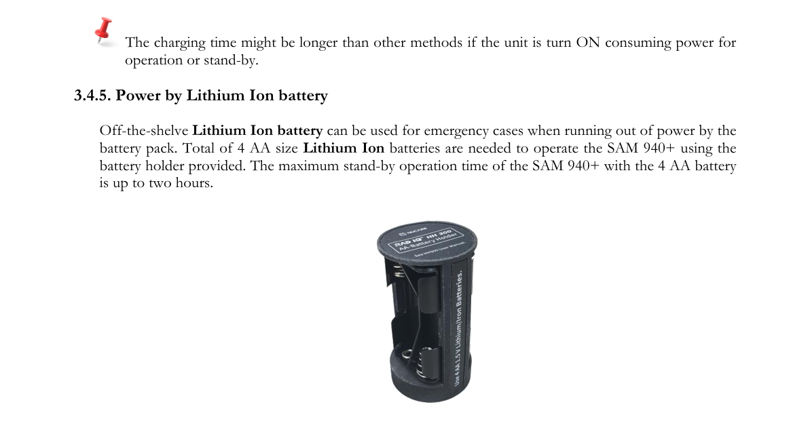
3.5. SAM 940+ Connectivity
Another advanced feature of the SAM 940+ that is hardly found in other products is its ability to connect to external devices. It supports connection to external detectors, a network adaptor for 4G/LTE network, and other devices via its USB port or a LIMO connector.
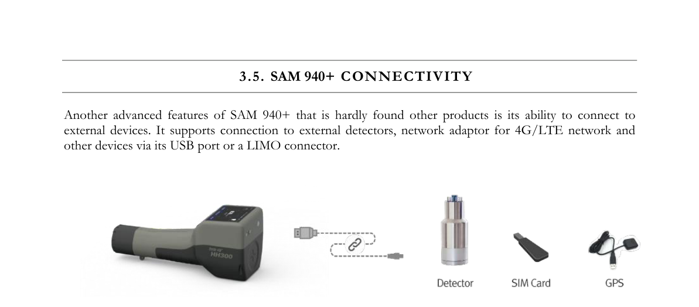
A detachable device for the SAM 940+ has to meet the required communication protocol. Consult with a Nucare engineer for details and feasibility.
3.6. SAM 940+ Software
The SAM 940+ system includes two dedicated software programs for conducting surveys and analyzing results on a computer.
3.6.1. PeakAbout IV for the detector unit
- PeakAbout IV is used for configuring and calibrating the system, and for real-time measurement and analysis of data acquired by the detector unit. It is based on the Android OS.
- Detailed instructions for operating PeakAbout IV are in Chapter 4.
3.6.2. PeakID IV for the PC
- PeakID supports management of Event Log files, data analysis including integration of data from multiple units, and data backup. It is compatible with PCs that run Windows 10 or higher.
- Detailed instructions for installing and operating PeakID IV are in Chapter 7.
3.7. Prerequisites for the Operation of the SAM 940+
3.7.1. Update configuration parameters
There are a few critical configuration parameters that are important in operating the SAM 940+. The SAM 940+ unit is delivered with configuration parameters set by factory default. However, it is recommended to edit the customized parameters that should be tailored to each user before operating the unit.
PeakAbout IV itself allows the user to edit some of the configurable parameters. However, using PeakID IV installed on a PC with a mouse and keyboard is more convenient for editing those. In addition, all the configurable parameters can be accessed/edited by PeakID IV.
There are two ways to upload configuration parameters from a PC to the SAM 940+, i.e., using a USB memory device or using a WiFi network. The former is the easier method, while the latter requires a pairing procedure between the SAM 940+ and a PC.
3.7.1.1. Using a USB
- Edit configuration parameters using PeakID IV installed on a PC. Refer to Section 7.9.3. User setup and 7.9.4. Administrator setup.
- Copy the configuration to a USB memory device (refer to Section 7.9.2).
- Upload the configuration into the SAM 940+ (refer to Section 6.3.4.4).
3.7.1.2. Using a WiFi network
- Edit parameters using PeakID IV installed on a PC. Refer to Section 7.9.3. User setup and 7.9.4. Administrator setup.
- Pair the SAM 940+ and a PC (refer to Section 6.3.4. Paring).
- Upload edited configuration to the SAM 940+. Refer to Section 7.9.3. Upload/download configuration via WiFi network.
3.7.1.3. Factory default parameters and their values. Factory default parameters are summarized in Table 3.7.1.
Table 3.7.1. Factory default parameters
| Privilege | Parameter | Factory default | Note |
|---|---|---|---|
| USER | User Name | BNC | |
| User Location | BNC | ||
| Detector Info | TBD | Device dependent information | |
| SW version | TBD | Currently installed SW version | |
| Alarm Ringtone | Siren | ||
| Alarm Volume | 100% | ||
| ADMIN. | Isotope Library | ANSI NaI | |
| Sleep mode time | 300 sec. | ||
| Manual ID Time | 60 sec. | ||
| Increment Time | 10 sec. | ||
| Background Time | 60 sec. | ||
| Calibration Counts | 200,000 cnt. | ||
| Doserate Unit | µrem/h | ||
| Display Option | Linear | ||
| Alarm mode | FIX | ||
| Alarm Threshold | 1000 cps. | ||
| Health Alarm | 10 mSv/h | ||
| Neutron Alarm | 0.8 | ||
| Reachback Account | none | Reachback email information | |
| RadResponder Account | BNC | ||
| Device WiFi | none | ||
| Admin Password | 1234 | ||
| Time Zone | USA/LA | ||
| Sequential mode | Off | ||
| Seq. measurement | 300 | ||
| Seq. pause time | 3 | ||
| Seq. repeat | 5 |
4.PeakAbout IV
4.1. Introduction
The main function of the PeakAbout IV application software is to provide dose (and count) rate data for the gamma-ray. In addition, it provides the operator with a convenient graphic status display and access to the analytical tools. It also manages the configuration and calibration of the SAM 940+ unit.
The intuitive, simple and hierarchical structure design of the new PeakAbout IV software makes the operation of the SAM 940+ easy and flawless. In addition, function buttons on the handle provide extra convenience in handling the unit while wearing gloves. Details of the application software structure and its functions are described in the following sub-sections.
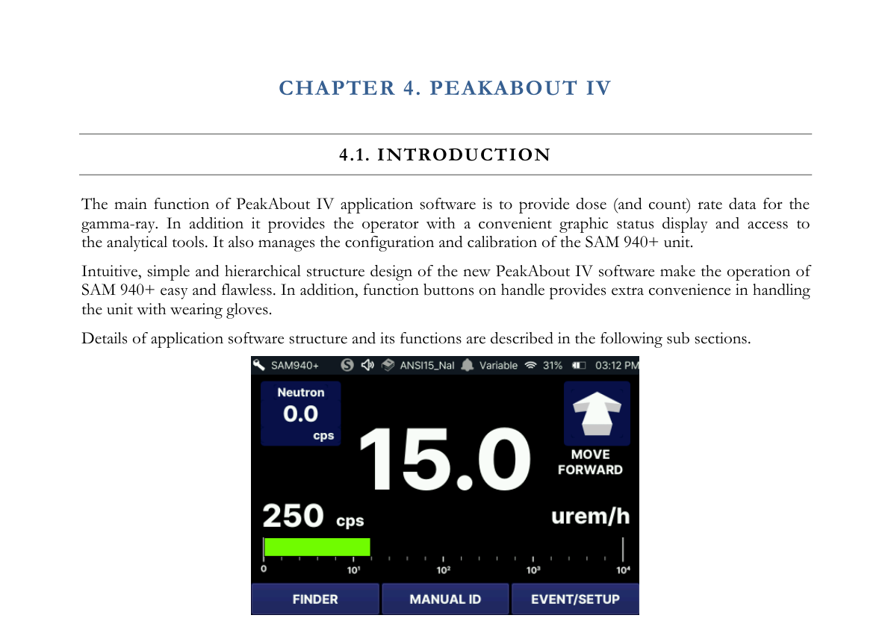
4.2. Function Buttons
4.2.1. Function Buttons
The function buttons of the SAM 940+ on its neck provide a natural grip with convenient control and operation of the unit. A user can operate the buttons while wearing a glove. Each function key performs actions corresponding to the menu at the bottom; for instance, FINDER ①, MANUAL ID ②, and EVENT/SETUP ③ actions are executed when the left, middle and right function buttons are pressed, respectively.
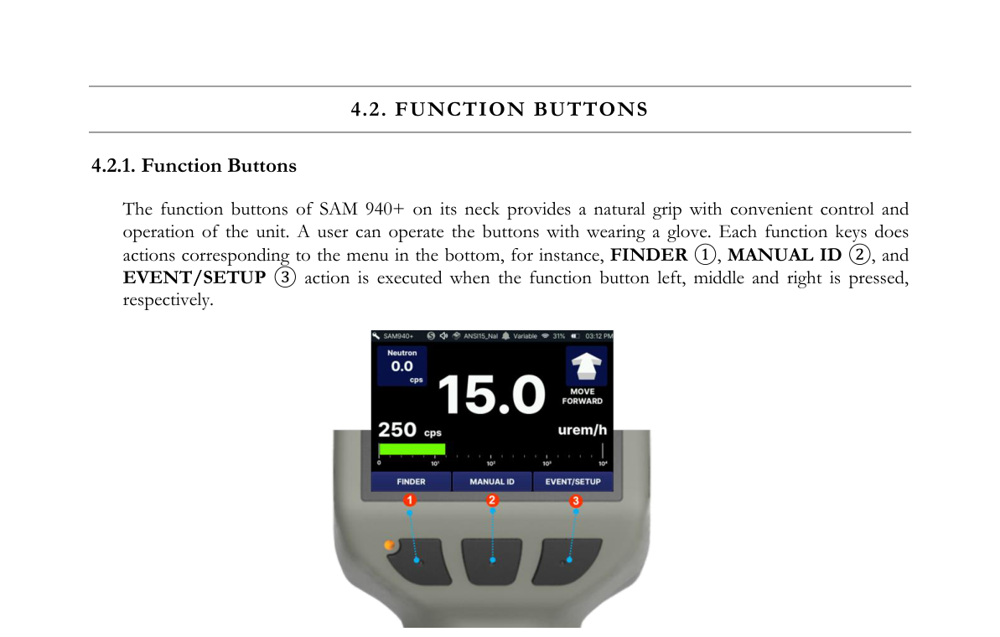
4.2.2. Double action function button
In some menu screens, the function button performs two actions. For example below (the screen for typing in a password for administrative access), each function button does two actions, i.e., LEFT/UP, OK/DONE and RIGHT/DOWN.
The second action, i.e., UP, DONE, and DOWN, becomes effective by pressing the corresponding button and holding it for about 2–3 seconds. The action becomes active when the button is released.
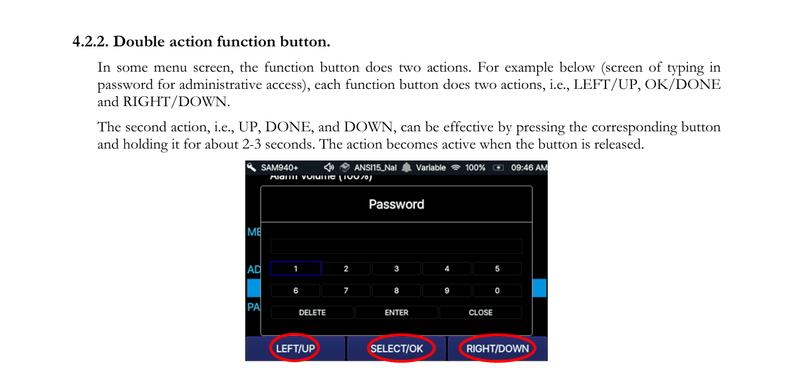
4.2.3. Keyboard Usage Guide
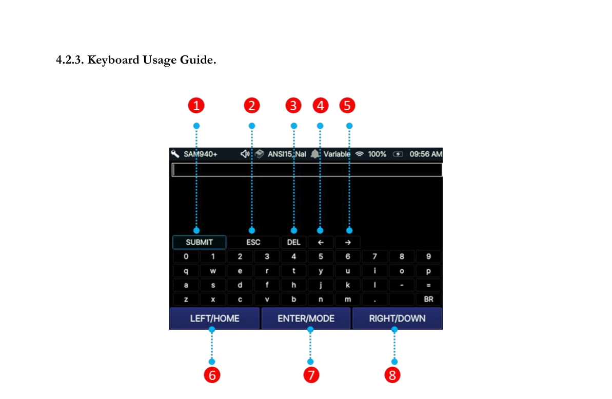
| # | Key | Function |
|---|---|---|
| 1 | Submit button | Submit all the text you have entered |
| 2 | Esc | Close dialog |
| 3 | DEL | Deletes the last character you entered or the character before the typing cursor |
| 4 | Left navigation | Move left one character |
| 5 | Right navigation | Move right one character |
| 6 | LEFT/HOME | LEFT: Move to the left. Hold HOME to quickly go to the ‘Submit’ button |
| 7 | ENTER/MODE | ENTER: select the character you choose. MODE: switch among 3 modes — normal characters (Figure 4.2.3), capital letters (Figure 4.2.4), and special characters (Figure 4.2.5) |
| 8 | RIGHT/DOWN | RIGHT: Move right. Hold DOWN button to move down |
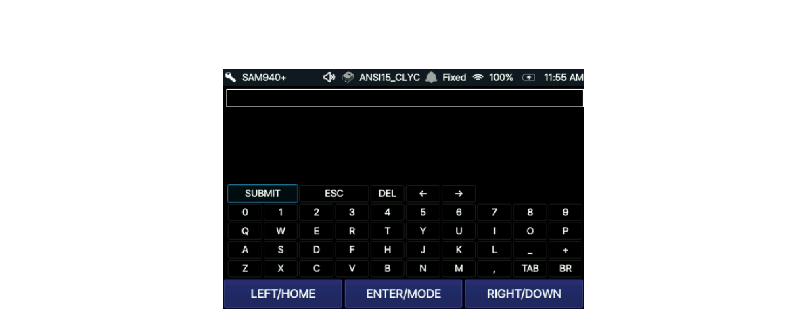
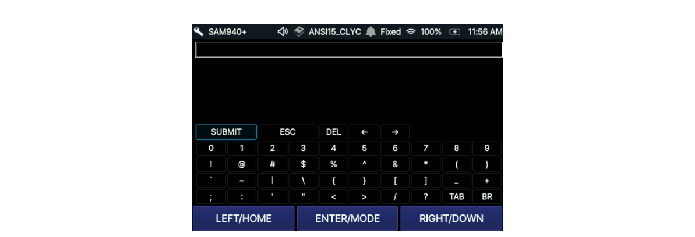
4.3. Main Screen
The screen's main function is to display dose rate and count rate data for gamma-ray energy in real time, and neutron count rate data (if so equipped) as well. In addition to displaying dose rate and count rate data on a logarithmic scale, the main screen gives information on the system's operating status (Figure 4.3.1). All real-time operations and menu access begin at the main screen.
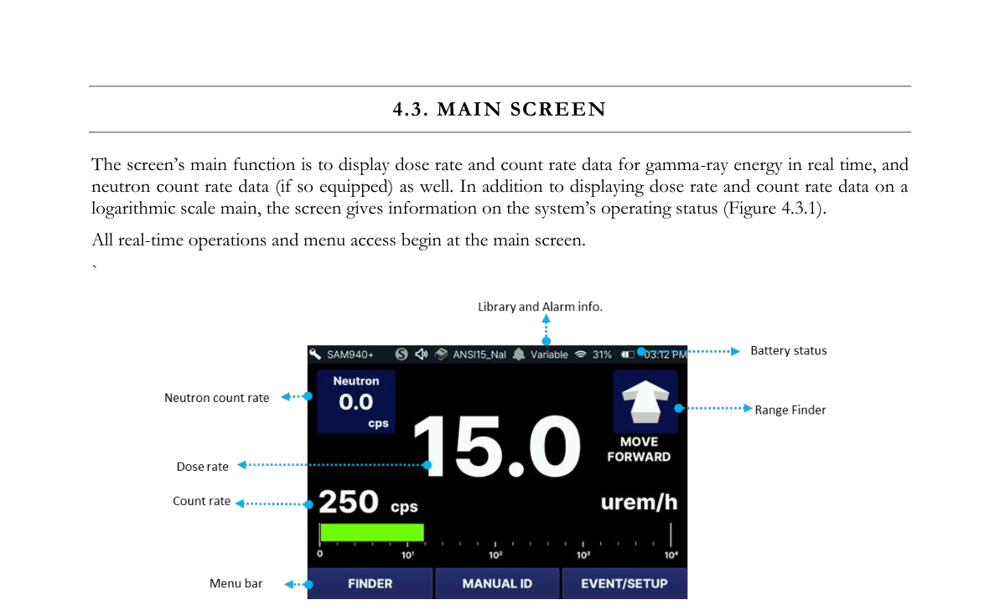
4.4. Menu Hierarchy
PeakAbout IV's menu hierarchy is summarized in Figure 4.4.1. FINDER, MANUAL ID and EVENT LOG menus can be accessed from the HOME screen. The SETUP menu is hidden from the MAIN screen but it can be accessed by pressing the EVENT LOG button for 2 seconds.
The FINDER menu is divided into FINDER and REALTIME. The FINDER screen is the primary display when the FINDER menu is selected. The FINDER and REALTIME screens can be toggled with each other.
The MANUAL ID menu is divided into SPECTRUM and CLASSIFIER. The SPECTRUM screen is the primary. The two screens can be toggled with each other. When the MANUAL ID is completed, the EVENT REPORT screen appears automatically. REACHBACK and CAMERA menus can be accessed from the EVENT REPORT screen.
The EVENT LOG menu is divided into EVENT ID and EVENT INFO. The two screens can be toggled with each other. The primary screen is EVENT ID and the REACHBACK screen is accessible from it. The CAMERA screen can be accessed from the EVENT INFO screen.
The SETUP menu consists of USER setup, Measurement, Administrator setup and Paring. Details of each menu are described in Chapters 5 and 6.
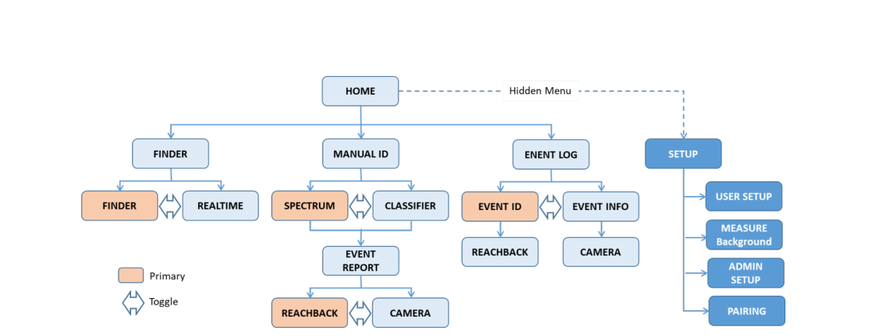
5.Basic Operating Instructions
5.1. Prepare the Equipment for Operation
5.1.1. Charge the battery
Charge the battery (refer to Section 3.4. Power and Battery Charger). You may check the battery indicator for power status as shown in Figure 5.1.1.
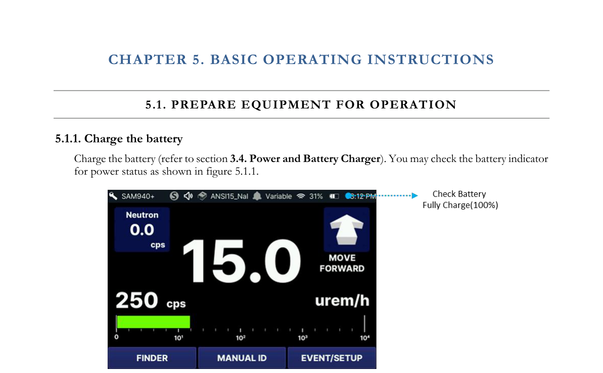
5.1.2. Turn power on
Turn the power switch on. The power switch is located on the left side of the unit. Press the red button (Figure 5.1.2).
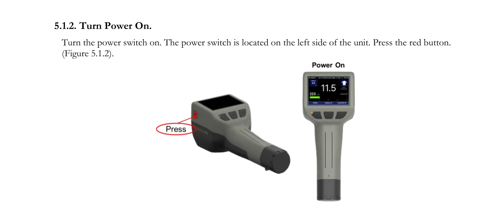
5.2. Auto Calibration
The Auto Calibration and Auto Stabilization features adjust the calibration parameters of the SAM 940+ to correct for drift caused by environmental changes in ambient temperature. Auto Calibration and Auto Stabilization can recover peak shift up to ±20%. If drift of more than ±20% between the stabilized peak and the original peak (Cs-137 calibration peak) occurs, then you must perform manual calibration using a Cs-137 source.
Auto Stabilization begins immediately after the completion or cancellation of Auto Calibration and executes again every three minutes, except when the system is in an alarm condition or when performing Manual Identification.
When Auto Calibration or Auto Stabilization is executed, the system automatically adjusts its gain using the 1461 keV energy peak emanated by the K-40 radionuclide from natural background and no other calibration source is needed. If necessary, such as in the rare case of a location where levels of potassium are unnaturally low (in a boat surrounded by water for instance), supplemental KCl (potassium chloride) powder can be used to achieve stabilization more quickly.
Auto Calibration automatically executes when PeakAbout IV is initiated. We recommend waiting for Auto Calibration to complete (100%) before proceeding. Auto Calibration can be stopped by pressing Cancel if necessary. A pop-up message appears when the auto-calibration is completed (Figure 5.2.1). Make sure that there are no radiation sources in the vicinity during Auto Calibration.
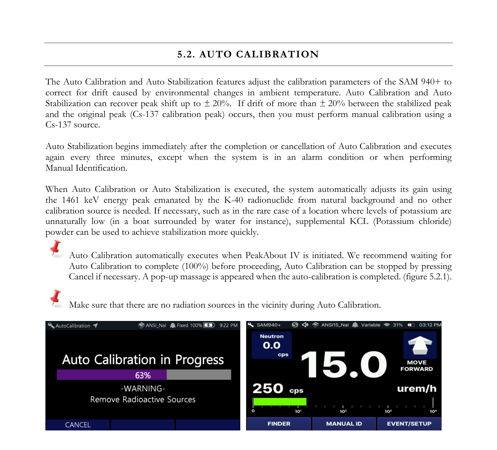
5.3. Perform Background Measurement
Reliable background information is critical to good nuclide identification and alarm performance. PeakAbout IV uses an advanced NORM rejection algorithm to minimize false alarms due to fluctuations of Naturally Occurring Radioactive Material in the background.
- Make sure there are no radiation sources near the SAM 940+.
- Move to the SETUP screen by selecting EVENT LOG and holding for 2 seconds ①.
- Select /Measurement/Background ②.
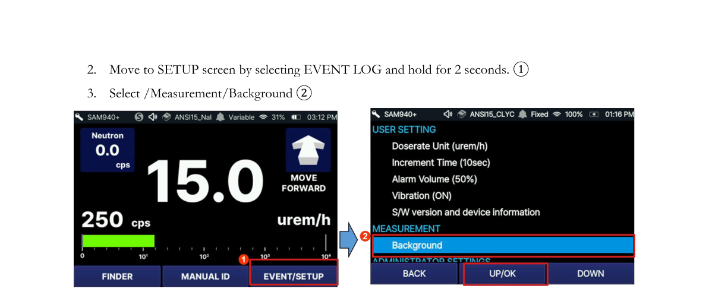
- A spectrum measurement will begin and will automatically update during the measurement (Figure 5.3.2).
- To cancel background measurement, select the BACK button.
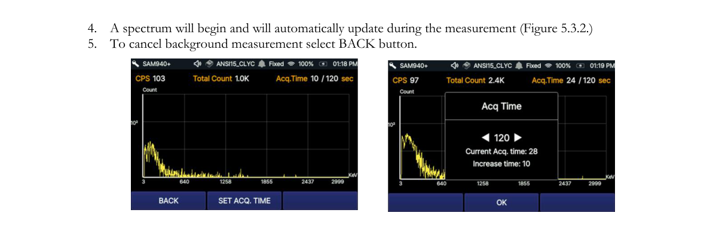
The background spectrum (displayed in yellow) is automatically updated during the measurement. Measurement time is defined in the Setup menu. The default time is 60 seconds. To change this setting, you must use PeakID IV. Refer to Section 7.9.6.5. Background Measurement Time. SET ACQ. TIME allows the user to manually increase/decrease the background measurement time as shown in Figure 5.3.2.
5.4. Begin Monitoring Radiation
The SAM 940+ automatically begins monitoring radiation when the Main screen opens.
- Look at the alarm mode area on the status bar (Figure 5.4.1). If Variable Alarm Mode is in effect, allow about 20 seconds for the unit to collect background and threshold data before surveying.
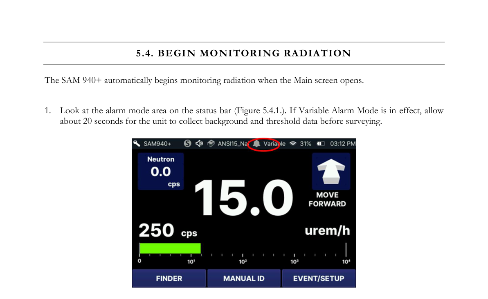
- The main screen displays both the dose rate (rem/h or Sv/h) and count rate (counts per second, cps) of gamma activity. If so equipped, the count rate for neutron activity is also displayed on the Main screen. The gamma dose rate scale is logarithmic. PeakAbout IV automatically scales to µrem/h or mrem/h (µSv/h or mSv/h) according to the detected activity level.
- You may choose FINDER to view the FINDER or REALTIME screen during monitoring instead of the Main screen. The Realtime screen emphasizes count rate rather than dose rate information. Counts per second (cps) are displayed on a graph that moves to the left as it updates every second. The full graph represents the most recent 60 seconds of cps.
- You might prefer to use the REALTIME ③ screen because the graph can alert you to a momentary increase in activity more effectively than the rapidly changing numerals on the Main screen. With the Finder screen, you also have a second chance to observe evidence of a source that you might not notice otherwise. The system will alarm regardless of which of these screens is enabled when the alarm threshold is exceeded.
- FINDER ② provides directional information of detected isotopes. Combining radiation events and the internal gyro sensor response, PeakAbout IV estimates the direction of the gamma source. The detailed instructions for the FINDER feature are described in Section 5.9. Find Directional Information of Isotopes.
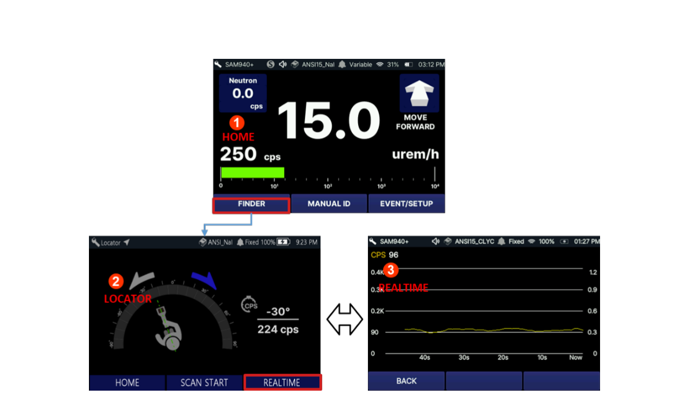
5.5. When the SAM 940+ Has Alarmed
When the system detects radioactivity, the readout on the main screen changes from white to red (Figure 5.5.1), and the audible alarm sounds. There is no reason to panic when this happens, as the alarm merely indicates that detected activity has only exceeded normal background dose rate or count rate. For concerns about personal safety, refer to Section 7.9.6.9. Select Alarm Mode and Alarm Threshold.
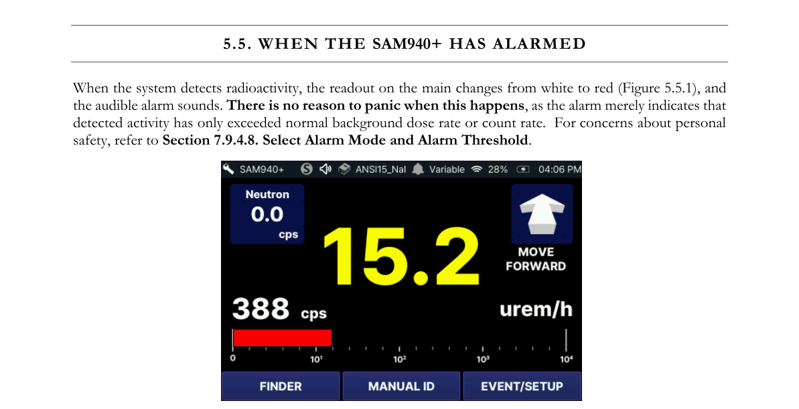
PeakAbout IV displays a helpful Range Finder (Table 5.5.1) on the Main screen. Use it to better locate the gamma source. To measure and record this kind of event, Manual ID must be performed. When the “IN RANGE” message displays, it is a good time to perform Manual ID. Refer to Section 5.6. Perform Manual ID.
Table 5.5.1. Range Finder messages
| Range Finder Message | What It Means |
|---|---|
| IN RANGE | Count rate/dose rate is within the optimal range for isotope identification. Manual ID should be performed in this range. |
| MOVE FORWARD | Count rate/dose rate level is too low for isotope identification. Move closer to the radiation source. |
| MOVE BACK | Count rate/dose rate level is higher than optimal for isotope identification. Move away from the radiation source. |
| DANGER | Activity level is extremely high. Move back to a distance with a safer level or leave the area immediately. |
5.6. Perform Manual ID
To measure and record an event, Manual Isotope Identification must be performed. Manual ID can be performed whether the SAM 940+ is in an alarm condition or not. Figure 5.6.1 shows a graphical illustration of ways to toggle between the Main screen and Manual ID screen using the function buttons.
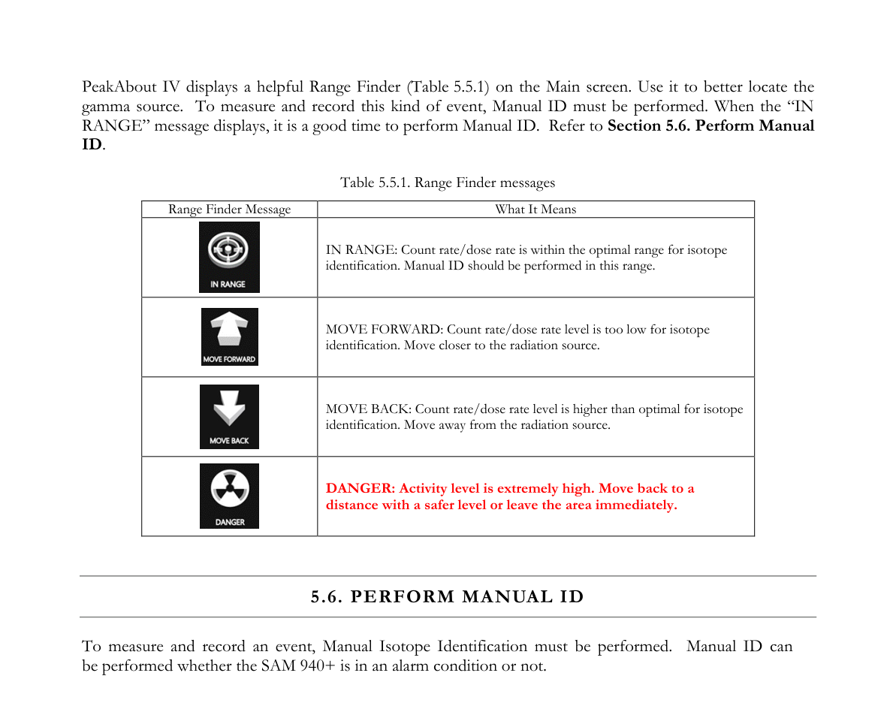
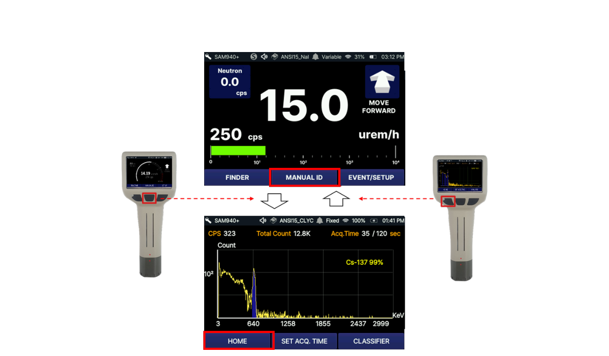
5.6.1. Initiate Manual ID
Initiate Manual ID by selecting the MANUAL ID button on the Main screen (Figure 5.6.2).
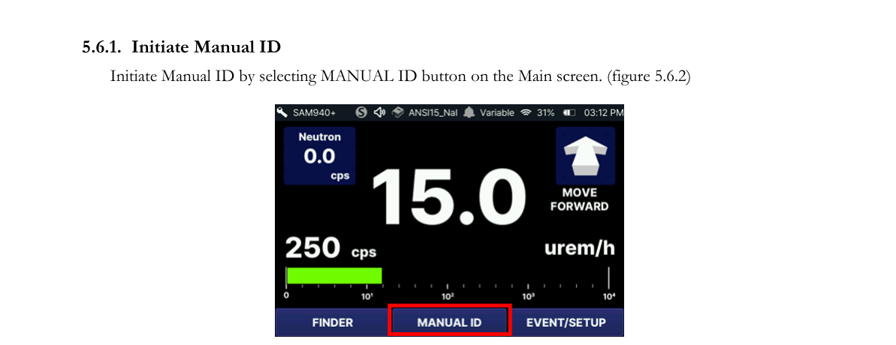
When Manual ID is initiated, PeakAbout IV begins recording an event spectrum (Figure 5.6.3). The default measurement time is 60 seconds. While the Manual ID is running, you may decide that you will need to record a longer measurement. Without interrupting or restarting your Manual ID, you can extend or reduce the measurement time in increments of 10 seconds. Default measurement time can be set in PeakID (refer to Section 7.9.6. Administrator setup).
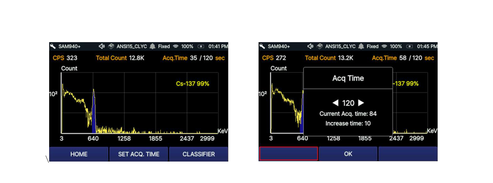
5.6.2. Toggle between Spectrum screen and Classification screen
Up to 10 isotopes can be identified simultaneously and presented on the Spectrum and Classification screens. The Spectrum screen displays the event spectrum. On the Classification screen, identified isotopes are displayed on a color-coded bar graph.
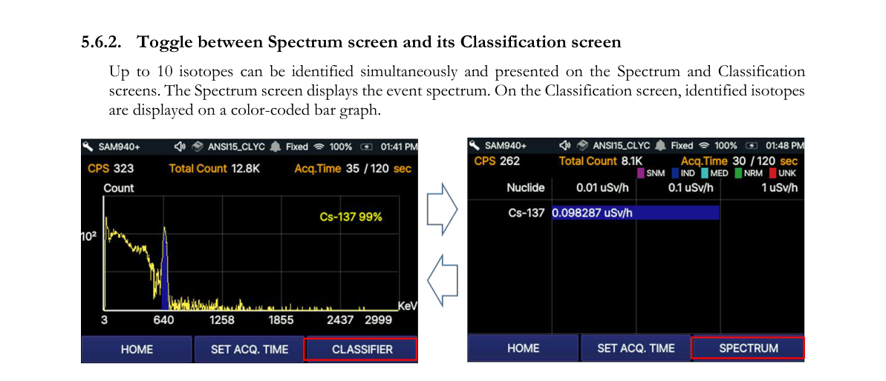
5.6.3. Spectrum screen
The Spectrum screen is shown in Figure 5.6.5 and its contents are summarized in the table below.
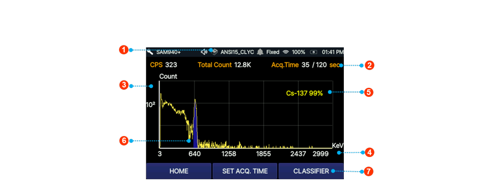
| # | Item | Description |
|---|---|---|
| 1 | Status bar (right) | Displays battery indicator and time |
| 2 | Acquisition time | Allows user to increase/decrease capture time and displays progress |
| 3 | Counts | Y axis displays counts on a self-adjusting, logarithmic scale |
| 4 | Channel/Energy | X axis displays energy on a linear or QCC scale |
| 5 | Nuclide name | Displays identity and confidence level of identified nuclide(s) |
| 6 | Photo peak | Color-coding corresponds to Classification screen (see Figure 5.6.6) |
| 7 | Classifier | Toggle between Spectrum screen and Classification screen |
5.6.4. Isotope classification screen
The Isotope Classification screen is shown in Figure 5.6.6 below. In this mode, the real-time Dose Rate measurement of identified nuclides is graphically displayed in a horizontally oriented bar graph. If multiple isotopes are identified, PeakAbout IV will place the most significant isotope (highest contributing dose rate) as the top-most bar, and the remaining isotopes in descending order to the least significant isotope (lowest contributing dose rate). Each bar will be named and displayed with the corresponding classification color as shown in Figure 5.6.6 ④.
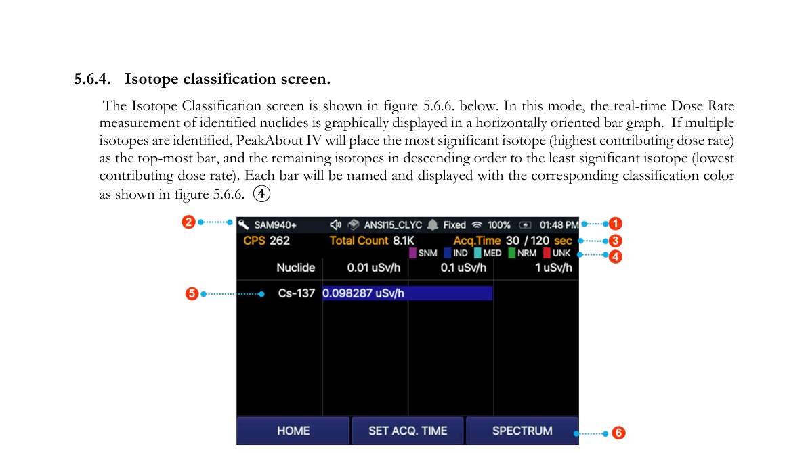
| # | Item | Description |
|---|---|---|
| 1 | Status bar (right) | Displays battery indicator and time |
| 2 | Status bar (left) | Displays unit name, selected library, and alarm mode |
| 3 | Classification | Classifies identified isotopes as: SNM – Special Nuclear Material (magenta); IND – Industrial Isotopes (blue); MED – Medical Isotopes (cyan); NRM – Naturally Occurring Radioactive Material (green); UNK – Unknown Material (red) |
| 4 | Event time and CPS | Time during event, acquisition time, and counts per second (CPS) |
| 5 | Dose rate | Displays dose rate of classified isotope on color-coded, logarithmic bar graph |
| 6 | Spectrum screen | Toggle between Classification screen and Spectrum screen |
5.6.5. Identify Result
When the measured time has elapsed, PeakAbout IV displays the Identify result dialog showing the confidence level, name and classifier of the identified isotope. Click the center button to turn this dialog off and on.
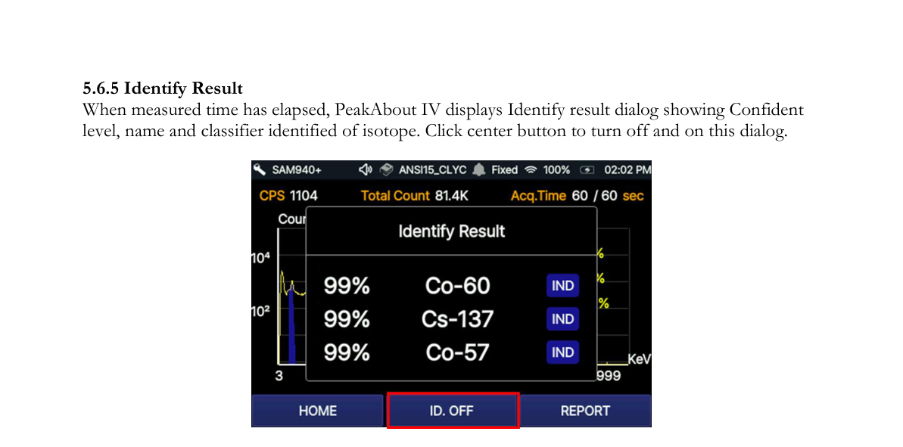
Click the Report button on the left to navigate to the Event Report screen.
5.6.6. Event report screen
When the measurement time has elapsed, PeakAbout IV displays the Event Report (Figure 5.6.8). On this screen, you may send the event to reach-back or take photos.
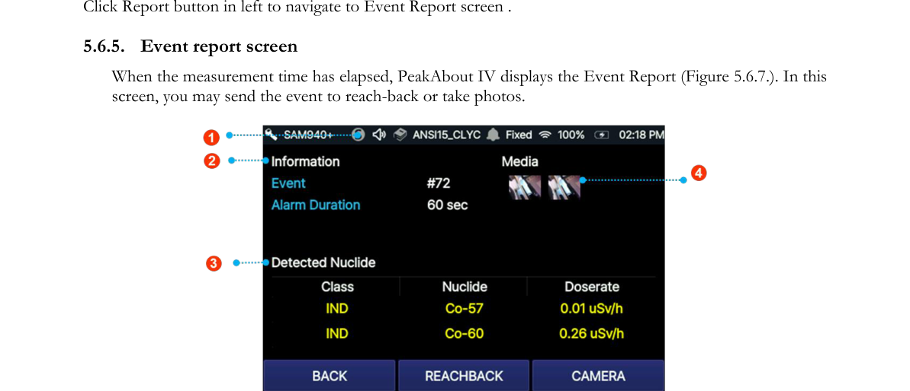
| # | Item | Description |
|---|---|---|
| 1 | Status bar (right) | Displays selected library, alarm mode, battery indicator and time |
| 2 | Event Information | Total count, count rate and Acq. Time (ID progress) |
| 3 | Detected Nuclide | Displays identified isotope(s) with classification, dose rate, and confidence level |
| 4 | Media list | Allows review of attached photo(s) |
5.7. Transmit Event Data to Reach-back
When operating within range of Wi-Fi, the SAM 940+ allows you to transmit spectrum and event data directly to a prearranged location such as a U.S. DOE reach-back facility, group leader, command center, etc.
5.7.1. Transmit event to reach-back when manual ID is completed
Data from an Event that you select is emailed in N42-compatible XML format to the specified recipient.
- Select the REACHBACK button when manual ID is completed.
- A dialog box will appear to select transfer method. Select ReachBack.
- Reachback progress is shown during the sending process.
- A transmit success message appears when transmission is completed.
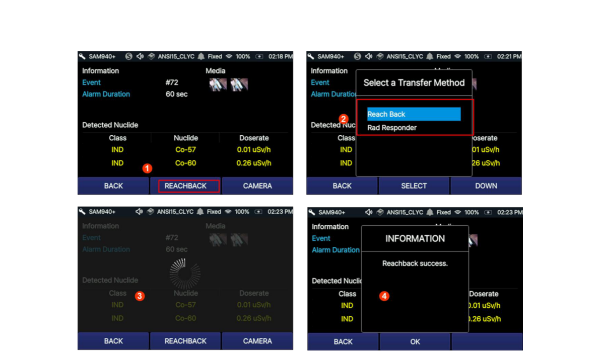
5.7.2. Transmit event to RadResponder when manual ID is completed
In the United States, we have partnered with FEMA to implement RadResponder, a free network for the rapid collection and management of radiological data during an emergency. When the SAM 940+ is operating within range of Wi-Fi, spectrum and event data can be uploaded to the RadResponder cloud in the appropriate format. RadResponder can be accessed on PDAs, smartphones, tablets, or any computer connected to the web, allowing it to be seamlessly employed at all levels of government during a radiological or nuclear emergency.
- Select the REACHBACK button when manual ID is completed.
- A dialog box will appear to select transfer method. Select RadResponder.
- Reachback progress is shown during the sending process.
- A transmit success message appears when transmission is completed.
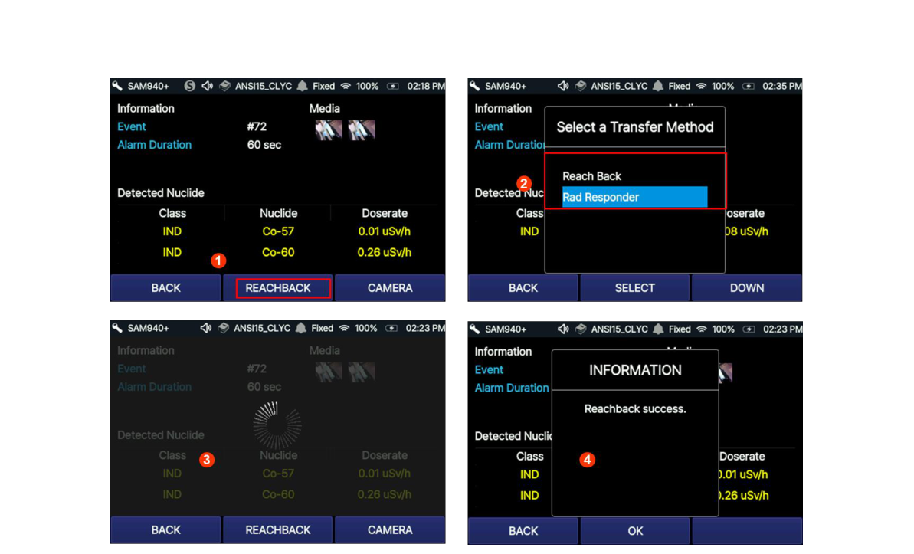
5.8. Attach Photo Immediately After an Event
Immediately upon completion of Manual Identification, the Event Report allows you to attach photos to the data that has been automatically saved in the Event file. (For instructions on adding media to a previously saved Event, refer to Section 6.1. Use the Event Log to Access Event Data.)
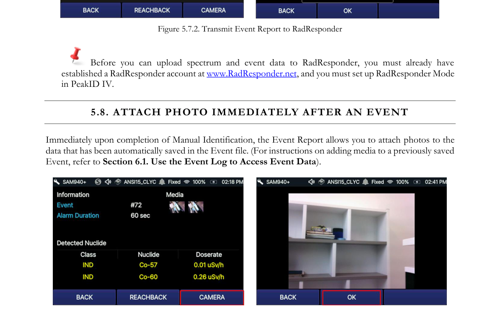
5.9. Find Directional Information of Isotopes
The SAM 940+ provides directional information of isotopes, called FINDER. Combining radial radiation activities and the internal gyro sensor response, PeakAbout IV estimates the direction of the gamma source. The FINDER screen can be accessed by selecting the FINDER button from the main screens.
5.9.1. Access the FINDER screen
- Access the FINDER screen by selecting the FINDER button as shown in Figure 5.8.1.
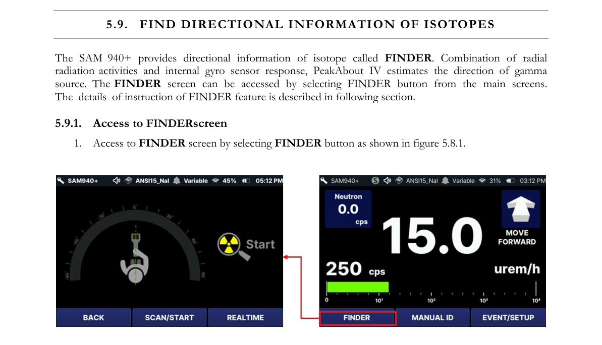
5.9.2. Start scan
- Select SCAN START.
- Hold the SAM 940+ firmly and position it in front of your body.
- Slowly sweep around the angle, with the maximum rotation from -90 degrees (counterclockwise) to 90 degrees (clockwise).
The current angle ①, count rate ② and rotation direction at the given direction will be displayed as shown in Figure 5.8.2. To finish the scan, select SCAN STOP.
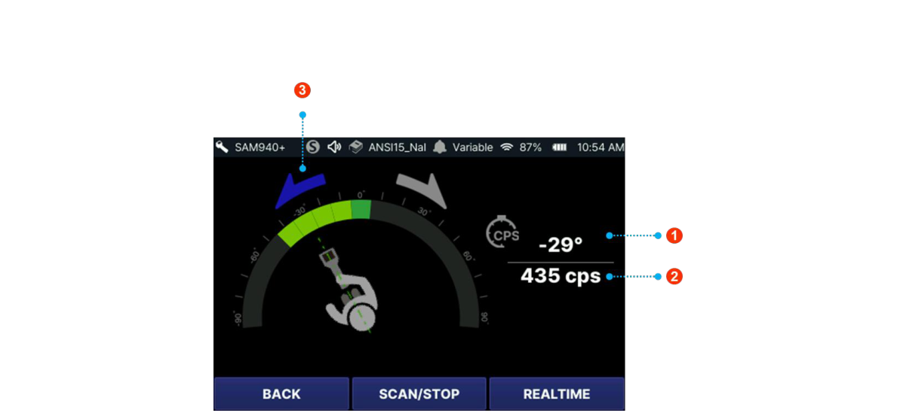
5.9.3. FINDER report
Immediately upon completion of the scan, the direction of the isotope ① is displayed as an arrow as shown in Figure 5.8.3. In addition to the graphical indicator of the location, the range scan is shown in ②. The isotope location result is located at angle ③ and count rate ④.
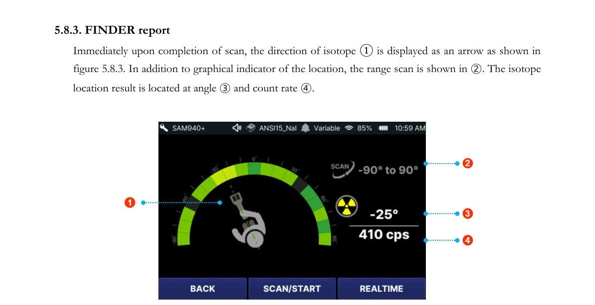
5.9.4. Search fail cases
The SAM 940+ is unable to locate isotopes if the activity is too low, the scan is too fast, or the scan is conducted in normal background conditions. No-source results are shown in example Figure 5.8.4. The activity of the isotope should be greater than or equal to double the background activity.
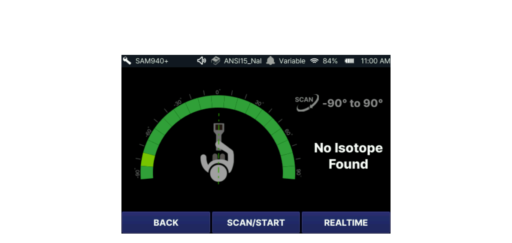
5.10. Favorite Event
The Favorite Event feature allows the user to tag an Event and find it later as a favorite.
5.10.1. Add Favorite Event
- At the end of Manual ID, the ID report screen shows up as shown in Figure 5.10.1.
- Select and hold the REACHBACK button for 2 seconds.
- The star icon is filled with blue color and an “add favorite” message appears.
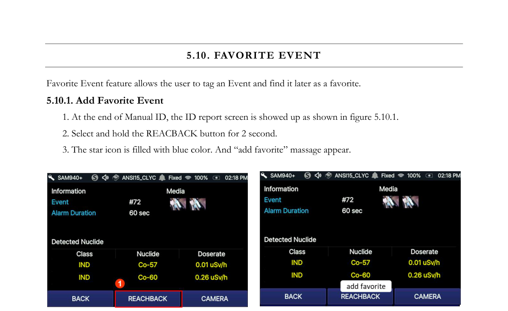
5.10.2. Remove Favorite Event
- Select and hold the REACHBACK button for 2 seconds.
- The star icon returns to normal and a “remove favorite” message appears.
The favorite event is displayed in yellow color in the event log list as shown in Figure 5.10.3.
5.11. Sleep Mode and Turn Off After Operation
The SAM 940+ falls into “sleep mode” automatically when it is not in use for a certain time (the setup sleep mode time is defined in Section 7.9.6.2). The sleep mode LED shown in Figure 5.11.1 is turned on (yellow LED). It wakes up by pressing any function key.
6.Operating Instructions: Event Log and Setup Menus
6.1. Use the Event Log to Access Event Data
When Manual ID is performed, PeakAbout IV automatically generates and saves an Event file that contains the results. Just as with a live Event Report, opening a saved Event allows you to analyze the saved spectrum, attach photos and transmit Event data. A saved event file can be accessed by selecting EVENT LOG as shown in Figure 6.1.1.
Once an event is selected from the Event Log list and you select the OK button, the screen changes to the EVENT ID screen ② or toggles to EVENT INFO ③. The EVENT ID displays spectrum information along with detected nuclides and count rate. On this screen, the reach-back service is available. The other screen, EVENT INFO ③, contains user information, location, average dose rate and maximum dose rate, and photo. The camera option is available from this screen.
6.2. Use the Event Log to Transmit Event Data to Reach Back
Reach-back transmission can also be initiated from the Event Report. Instructions for configuring necessary settings are described in Section 7.6.1.5.
6.2.1. Transmit event to reach-back
- To open the Event Log, select EVENT LOG from the Main Screen (Figure 6.1.1).
- To locate an Event, scroll up/down using the function button and select the desired event by pressing the OK button (hold for 2 seconds). Refer to Figure 6.1.2.
- To transmit the Event, select the REACHBACK button.
- Select ReachBack.
6.2.2. Transmit event to RadResponder
- To open the Event Log, select EVENT LOG from the Main Screen (Figure 6.1.1).
- To locate an Event, scroll up/down using the function button and select the desired event by pressing the OK button (hold for 2 seconds). Refer to Figure 6.1.2.
- To transmit the Event, select the REACHBACK button.
- Select RadResponder.
6.3. Use the Setup Menu for User Setting
Setup Menus are intentionally hidden from the main tasks such as Radiation Monitoring and Manual ID to maximize ease-of-use during operation. This section discusses how to access and use these features. For the convenience of the user, PeakAbout IV allows the operator permission to access basic setup, called User setting, and some advanced features which require administrator login. All the setup parameters not listed in PeakAbout IV are managed by PeakID IV (refer to Section 7.9. Configuration Menu GUI).
The SETUP screen of PeakAbout IV is shown in Figure 6.3.1 and the features manageable by PeakAbout IV are summarized in the table below.
| # | Item | Description |
|---|---|---|
| 1 | USER setting | Set increment time, alarm volume, S/W Update |
| 2 | Measurement | Perform Background measurement |
| 3 | Administrator | Set display option, password, calibration measurement and restore factory HW configuration |
| 4 | Paring | WiFi connection to Windows program on a PC (PeakID SW) |
6.3.1. User setting
6.3.1.1. Doserate Unit: The user can define the doserate unit either as µrem/h or µSv/h as shown in Figure 6.3.2.
6.3.1.2. Increment Time: The user can define the increment time of measurement for Manual ID and Background measurement as shown in Figure 6.3.3.
6.3.1.3. Alarm volume: The user can define the alarm volume. A volume of 0 represents mute mode. Alarm ringtone can be selected by PeakID IV.
6.3.1.4. Vibration: The user can select vibration mode On/Off.
6.3.1.5. SW version and device information: The User Settings menu includes a Device Information sub-menu which contains detailed reference information about your SAM 940+ and PeakAbout IV upgrade. Instructions for upgrading software are described in Section 6.3.4.9. Update From USB.
6.3.2. Measurement
6.3.2.1. Background: For instructions, refer to Section 5.3. Perform Background Measurement (Figure 6.3.6).
6.3.3. Access to Administrator Setup
You may access some advanced features with Administrator privilege. A password is required to access this feature. Some configurations are only accessed with administrator privilege. The administrator password set at the factory is ‘1234’. Please change it to a more secure combination when you receive the unit. The password may be changed in Administrator/New Password (refer to Section 7.9.6.14. Administrator Setup). Type in the password by using the function button and select ENTER as shown in Figure 6.3.7.
6.3.4. Administrator Setup Parameters
The administrator can manage some configuration parameters listed in Figure 6.3.8. They are categorized into spectrum, event and configuration management.
6.3.4.1. Spectrum management: Energy Calibration. While we recommend performing manual energy calibration to ensure optimal results, most normal operations can be conducted without this step. If a Cs-137 source is not available, skip this section.
- Place a Cs-137 source in front of the detector and initiate Energy Calibration.
- Remove the Cs-137 source and return to the Main screen.
Ideally, the Cs-137 source is active enough to generate approximately 2500 counts per second (cps). If the count rate is too high, increase the distance between the source and the detector unit. Decrease the distance if the count rate is low. We recommend that total integrated counts in the manual calibration spectrum be no less than 100,000. The number of counts is defined in the Administrator Settings menu. Refer to Section 7.9.6.6. Calibration Measurement Count. If necessary, calibration count can be adjusted using the SET COUNT function as shown in Figure 6.3.9.
6.3.4.2. Spectrum Management: Spectrum display. The SAM 940+ provides a special display called QCC (Quadratic Compression Conversion) along with a typical linear scale display. QCC is an adaptive display method that stretches/compresses vertical values such that high energy is compressed while low energy regions are stretched. Linear and QCC display can be toggled by selecting the X-axis display option as shown in Figure 6.3.10.
6.3.4.3. Event Management: Delete Event Log. All measured events in the DB can be deleted by selecting this option.
6.3.4.4. Event Management: Upload event DB to a USB device. The user can upload the Event DB in a SAM 940+ unit to a USB and upload it to a PC. Insert a USB and select ‘Upload Event DB to a USB’. The Event DB can be analyzed by PeakID IV software.
6.3.4.5. Configuration Management: AP setup. In order to communicate with a PC and to enable Reach-back and RadResponder services, the SAM 940+ unit has to be connected to an appropriate network via WiFi connection. The following is the procedure to set up the network AP address.
6.3.4.6. Configuration Management: Download configuration from a USB device. The configuration parameters saved in PeakID IV on a PC can be downloaded from a USB. Insert a USB and select ‘Download configuration from a USB device’.
6.3.4.7. Configuration Management: Restore factory HW configuration setting. The Restore Factory HW Configuration setting is used to reset parameters like calibration and high voltage bias for the installed detector among other settings. Situations in which this operation is useful are extremely rare, and the procedure should only be performed by a factory technician. Contact Nucare before performing this operation.
6.3.4.8. Configuration Management: Report diagnostic DB. In the case of a scheduled check-up, a malfunctioning unit and/or prevention of failures, a user can send diagnostic information to the manufacturer. By selecting ‘Report Diagnostic DB’, necessary information is automatically transferred to a technician in the service department of the manufacturer.
6.3.4.9. Update From USB. Instructions for updating the device:
- Visit the website https://bncsam.com/RESAM940PLUS.html and download the PeakAbout IV software.
- Copy the downloaded file to a USB memory stick.
- Insert the USB memory stick into the device.
- Access the Update from USB function as shown below.
- The update process will begin automatically and will take approximately 5–10 minutes to complete.
- After the update is finished, the device will automatically restart.
6.3.4.10. Fixed Mode. Fixed Alarm Mode is a basic method that assumes the background environment exhibits a very small amount of fluctuation. The alarm is triggered when the count rate exceeds the operator-determined threshold value. This method can cause false alarms if there is substantial background fluctuation due to Naturally Occurring Radioactive Material (NORM), as is often the case when the system is moving across a large area while actively monitoring.
The default threshold value for Fixed Alarm Mode is 1000 counts per second (cps), which is optimal for many applications. A typical background environment produces around 200 cps for a 3 x 3-inch NaI detector, or lower if a high-resolution detector option was chosen. A threshold value lower than 1000 is usually unnecessary and is more likely to generate false alarms. In situations where the background environment is known to be above normal, it may be necessary to select a higher value such as 2000 or 3000 cps to minimize false alarms.
6.3.4.11. Variable Mode Threshold Sigma. Variable Alarm Mode is a more advanced method that continuously samples the previous 10 seconds’ worth of background fluctuation and calculates the standard deviation above background (σ, or sigma) of the fluctuation. Using this method prevents alarms due to changing background (and eliminates the need to perform new background measurements). Instead, alarms are triggered when real gamma peaks exceed the standard deviation of the dynamic threshold value. We recommend using Variable Alarm Mode when moving across a large area that may be subject to changes in background. The default threshold value for Variable Alarm Mode is 4 (Sigma) which is optimal for many applications.
6.3.4.12. Neutron Threshold CPS. If your SAM 940+ includes the neutron detection option, then it contains either solid-state sensor arrays on a 6Li substrate (Domino) or a tube filled with 3He gas, integrated with moderator packaging inside the detector unit. PeakAbout IV will display neutron activity on the Main screen in counts per second (cps). The default value for Neutron Threshold is 0.8 CPS which is optimal for most applications.
6.3.4.13. Health Safety Threshold. For the user’s safety, PeakAbout IV features a separate Health Safety Alarm with a different ringtone and visual signal. When the safety threshold is exceeded, the distinctive Health Safety ringtone sounds, and the Operating Message displays “DANGER”. The Health Safety Alarm takes precedence over all other alarm conditions. The default value for Health Safety Threshold is 10,000 µrem/h (10 mrem/h).
6.3.4.14. Variable Pancake Threshold Sigma. The SAM 940+ also supports connecting to another external sensor such as a Pancake. The alarms for Pancake are triggered when real gamma peaks exceed the standard deviation of the dynamic threshold value.
6.3.4.15. Measurement ID Time. To measure and record an event, Manual Isotope Identification must be performed. Manual ID can be performed whether the SAM 940+ is in an alarm condition or not. The default Manual ID Measurement Time is 60 seconds.
6.3.4.16. Background Time. Reliable background information is critical to good nuclide identification and alarm performance. PeakAbout IV uses an advanced NORM rejection algorithm to minimize false alarms due to fluctuations of Naturally Occurring Radioactive Material in the background. The default Background Measurement Time is 60 seconds.
6.3.4.17. Select Library. The Library List in PeakAbout IV for the SAM 940+ contains four libraries which are optimized for each detector: sodium iodide (NaI), cerium bromide (CeBr), CLLBC, and CLYC detector. The default library is ANSI_NaI (ANSI_CeBr if your SAM 940+ has a high-resolution detector).
- ANSI: compliant with ANSI N42.34-2006 — 241Am, 133Ba, 57Co, 60Co, 137Cs, 152Eu (not ANSI required), 18F, 67Ga, 123I, 125I, 131I, 111In, 192Ir, 40K, 237Np, 237Np HE, 239Pu, 226Ra, 99mTc, 232Th, 201Tl, 233U, 233U HE, 235U, 235U HE, 238U
- IND: specialized with additional Industrial classified isotopes — 241Am, 109Cd, 57Co, 60Co, 134Cs, 137Cs, 152Eu, 111In, 192Ir, 40K, 85Kr, 54Mn, 22Na, 204Tl
- MED: specialized with additional Medical classified isotopes — 77Br, 58Co, 60Co, 67Co, 51Cr, 137Cs, 18F, 67Ga, 124I, 131I, 192Ir, 40K, 99Mo, 24Na, 81Rb, 82Rb, 83Rb, 124Sb, 46Sc, 75Se, 153Sm, 85Sr, 89Sr, 99mTc, 201Tl, 133Xe, 88Y, 90Y, 88Zr, 89Zr
- ANSI15: compliant with ANSI N42.34-2015 — 241Am, 133Ba, 57Co, 60Co, 137Cs, 67Ga, 131I, 192Ir, 40K, 239Pu, 226Ra, 99mTc, 232Th, 201Tl, 235U, 238U, DU, HEU, RGPu, WGPu
6.3.4.18. Alarm Ringtone. There are seven alarm ringtones to choose from: Danger, Siren, Morning call, Bell, Trumpet, Telephone call, and Beep. The default alarm ringtone is Danger.
6.3.4.19. Sleep Mode Time. To save power consumption and maximize operation time, the SAM 940+ falls into sleep mode when it is not used for a certain time. The default sleep mode time is 300 seconds.
6.3.4.20. Sleep Mode. PeakAbout provides two types of sleep mode:
- Enabled: Sleep mode will turn off the screen and disconnect from Wi-Fi.
- Disabled: No Sleep mode is applied.
6.3.4.21. Setting Time. The user can set up the time if the time in the system is not correct.
6.3.4.22. FINDER Offset Calibrate. Set up the Preference value for the Gyro Sensor. (This procedure is to be performed when using the FINDER function for the first time, after a software update, or if the Gyro Sensor is not working correctly.) Perform the setup by following these 5 steps:
- Step 1: Click START, then rotate 1 full cycle.
- Step 2: After rotating 1 full cycle, click STOP. The offset value (x,y) is then calculated.
- Step 3: Repeat Step 1 & Step 2 at least two more times.
- Step 4: After repeating Steps 1 and 2 three times, the mean offset value is then calculated.
- Step 5: Click BACK to set the mean offset value as the default Preference for the Gyro Sensor.
6.3.4.23. Email Setting. Users can set the recipient’s email and the sender’s information, including email address, password, server, port, and security settings.
6.3.5. Paring
The SAM 940+ unit can be paired to a PC for remote control, DB management, configuration setup, etc.
- Select the PARING menu ①.
- Press the Connect button to open the socket port using TCP, allowing PeakID, as the client, to connect to the device ②. After pressing Connect, the pairing status will change from “Disconnected” to “Waiting for connection”. Once PeakID has successfully connected, the pairing status will update to “Connected”.
- If you do not want to share data or wish to disconnect, you can press the Disconnect button.
7.PeakID IV Application
PeakID IV application software remotely controls the SAM 940+ in a similar fashion to PeakAbout IV. In addition, PeakID IV supports management of libraries, Event files, data analysis including integration of data from multiple units, and data backup. It is compatible with PCs that run Windows 10 or higher. The PeakID IV Installer can also be downloaded onto a PC from the Internet.
7.1. Downloading PeakID IV
- Using an Internet browser (Internet Explorer, Firefox, Chrome, etc.), type the following URL address to open the BNCSAM web page: http://www.bncsam.com/RESAM940PLUS.html
- Enter the serial number from the label on the detector unit, then click PeakID IV (Figure 7.1.2).
- Save the PeakID IV Installer on the PC (Figure 7.1.3).
7.2. Installing PeakID IV
Installing PeakID IV on the PC is a simple process that makes use of an automated installer.
- Go to the location where the PeakID IV Installer is saved. Click on PeakID IV.exe.
- Follow the prompts in the InstallShield Wizard (Figure 7.2.1).
7.3. Connecting SAM 940+ and PC
The SAM 940+ can be paired to a PC via WiFi network connection and USB cable.
7.3.1. Pairing the SAM 940+ to a PC via WiFi Network
Once the SAM 940+ is paired to a PC, manual ID, Event analysis and Configuration settings can be done from a PC. Follow the instructions below to pair the SAM 940+ to a PC.
- Click the Pairing Status bar ① located at the bottom of the PeakID IV main GUI.
- Input the IP address of the Device. The Device should be opened with Connect in Pairing mode. Press the Connect button to pair with the SAM 940+.
- The connection process is illustrated in the image below.
- After the connection is complete, the status bar will change to: Paired.
7.3.2. Connect the SAM 940+ to a PC via USB Cable
When the SAM 940+ is connected to a computer via USB cable, the device is recognized as a USB drive named RAD IQ USB, shown in Figure 7.3.4, and events can be loaded and analyzed, and configuration settings can be performed from the PC.
The event and configuration database on the SAM 940+ device is stored in the Home\Data folder, as shown in Figure 7.3.5.
7.4. Navigating the PeakID IV GUI & Structure
The home GUI (graphic user interface) of PeakID IV is shown in Figure 7.4.1. It consists of a tab menu bar on the left side of the screen ① and several partitioned windows for spectrum display, command functions and other information. The partitioned windows and their contents change depending on the selected menu. PeakID IV’s main menu is divided into Data Analysis, Event Log and Configuration. The details of each menu are described in the following sections.
| # | Item | Description |
|---|---|---|
| 1 | PeakID SW version | Information of PeakID IV SW version |
| 2 | Main Menu | Main menus of PeakID IV: Data Analysis, Event Log and Configuration |
| 3 | Device Name | Paired device name: serial number of SAM 940+ |
| 4 | Configuration | General configuration for PeakID IV |
| 5 | Function icons | Function icons |
| 6 | Partitioned Windows | Partitioned windows |
| 7 | Connection Status | Connection status of paired device |
7.5. Spectrum Manipulation
The Spectrum View window is an active screen that interacts with a mouse function. PeakID IV provides easy ways of manipulating the spectrum using the combination of active window and mouse actions. In addition, the “index cursor” supports an operator in analyzing the details of spectrum data.
7.5.1. Zoom in/out
Zoom in and out manipulation can be done using a mouse and its wheel (Figure 7.5.1).
- Place the mouse cursor at the ROI (region of interest) ①.
- Zoom in: scroll the mouse wheel up ②.
- Zoom out: scroll the mouse wheel down.
The Spectrum View window includes a mini window at the bottom right corner called “Chart Navigator”. It is a replicate of the Spectrum View in full dynamic range so that the zoom-in region is marked with an ROI box (Figure 7.5.2). The Chart Navigator is also an active window. The zoom-in region can be moved by synchronizing the movement of the ROI box on the Chart Navigator window.
7.5.2. Index Cursor
Two thin cross lines, called the “index cursor”, show up automatically along with an information box as shown in Figure 7.5.3 when the mouse cursor is on the Spectrum view area. The information box contains count, energy and channel value at the cross point of the spectrum. The Index Cursor moves along the spectrum contour when the mouse cursor moves left/right.
- Place the mouse cursor at the ROI region.
- Move the cross point to the desired point.
7.6. PeakID Configuration
7.6.1. Open Configuration Screen
Configurable parameters for the PeakID application software can be accessed by selecting the configuration icon on the right top of the PeakID GUI.
- Select the configuration icon ①.
- Type in the Administrator’s password ②.
- The PeakID IV Configuration window ③ will pop up.
- Set configuration parameters.
PeakID IV has two configuration menus. One is for PeakID IV itself and the other is for PeakAbout IV configuration. Refer to Section 7.9. Configuration Menu GUI for PeakAbout IV settings.
7.6.2. PeakID IV Configuration
PeakID IV configuration includes 6 setup parameters. The function of each parameter and its usage is described in the following sections.
| # | Parameter | Function |
|---|---|---|
| 1 | Doserate Unit | Define Doserate unit |
| 2 | Manual ID Acq. Time | Manual ID acquisition time or count setup |
| 3 | Manual ID Increment Time | Define increment time for manual ID |
| 4 | Change Admin. Password | Change new password for admin |
| 5 | RadResponder | RadResponder accounting setup |
| 6 | SW Information | SW information and manual update |
7.6.2.1. Dose Rate Unit. Rem/h or Sv/h unit can be used for dose rate unit. (Default dose rate unit is rem/h.)
7.6.2.2. Manual ID Acq. Time. Manual ID Acq. Time determines the measurement time for manual ID. Either elapsed time or total measured count can be used for measurement time. (Default measurement time is 60 seconds.)
7.6.2.3. Manual ID Increment Time. Define increment time for manual ID. (Default increment time is 10 seconds.)
7.6.2.4. Change Admin. Password. Change administrator’s password. (Factory setup is 1234. It is recommended to change it to a more secure combination.)
7.6.2.5. RadResponder Account. RadResponder is a free network for the rapid collection and management of radiological data during an emergency. When the SAM 940+ is operating within range of Wi-Fi, spectrum and event data can be uploaded to the RadResponder cloud in the appropriate format. Before you can upload spectrum and event data to RadResponder, you must already have established a RadResponder account at www.RadResponder.net, and you must set up RadResponder Mode in PeakAbout IV. The RadResponder setup is defined in the PeakID IV Settings menu (Figure 7.6.3).
- Click the Login button ①. The RadResponder Sign In API pops up.
- Sign in with user name and password ② (it should be a RadResponder Account).
- Select Sponsor name from the pop-up list ③.
- Select type of event from the pop-up list ④.
RadResponder requires you to define “Sponsor” and “Type of Event” so that the information is attached together with event data when it is uploaded to the RadResponder cloud. The Sponsor list and type of event differ for each RadResponder account. Once you sign in to RadResponder, PeakID IV automatically extracts the “Sponsor list” and “types of event” information assigned to the signed-in user so that the Sponsor and type of event can be selected after login is done.
7.6.2.6. SW information. To upgrade to the latest PeakID software, follow the instructions in Sections 7.1 and 7.2 to download and install the file PeakID IV (vx.x.x).exe to your PC.
7.7. Data Analysis Menu GUI
PeakID IV can remotely control the SAM 940+ when the unit is paired with a PC. The Data Analysis menu GUI is the gateway to perform remote manual ID, spectrum display and event analysis in real time. Figure 7.7.1 shows the major components and function buttons for the Data Analysis menu GUI.
| # | Item | Description |
|---|---|---|
| 1 | Spectrum View | Displays spectrum and count information |
| 2 | Isotope ID | Isotope ID result with classification color |
| 3 | Display Option | Setup X and Y-axis unit and dynamic range |
| 4 | Manual ID | Manual ID stop/start and Acq. Time or count setting |
| 5 | Function icons | Function icons for importing/exporting XML and print |
| 6 | Chart Navigator | Duplicate of spectrum view in miniature scale |
7.7.1. Spectrum View Window
The Spectrum View window ① consists of the spectrum view window, count rate information ② and chart navigator ③. It displays the spectrum from a real-time event measured from the SAM 940+. Count rate information is displayed in the top-right corner ② and the chart navigator provides a duplicate of the spectrum view in miniature scale ③. (Refer to Section 7.5.1 for manipulation of the spectrum and usage of the chart navigator.)
7.7.2. Isotope ID Result Window
The Isotope ID window ① shows the ID result along with classification information, confidence level and dose rate ②. The bottom of the ID window displays the index color scheme of classification ③.
7.7.3. Display Option Window
Display Option manages the display option of the Spectrum view. X and Y axes have two display options each and a total of 4 combinations of display options can be offered. Details of each display option are described in the following sections.
| # | Item | Description |
|---|---|---|
| 2 | Y-Axis | Display option for Y-axis |
| 3 | X-Axis | Display option for X-axis |
| 4 | Dynamic Range | Dynamic Range selection |
7.7.3.1. Y-axis display option. Spectral data can be displayed on either a linear or a logarithmic scale (Figure 7.7.6). To change between the two displays, click the Y-Axis option and select the desired display option.
7.7.3.2. X-axis display option. The X-axis unit can be selected as either Linear or QCC (Quadratic Compression Conversion) (Figure 7.7.7). Refer to the details of QCC spectrum display in Chapter 6. To change between the two displays, click the X-Axis option and select the desired display option.
7.7.3.3. Dynamic range option. A specially designed high voltage divider scheme enables the SAM 940+ to handle gamma energy up to 10 MeV. The Dynamic range option offers three DR selections: up to 150 KeV, 3 MeV and 10 MeV. Figure 7.7.8 shows an example of each different dynamic range selection case. (3 MeV DR is the typical dynamic range setup for normal use. 100 KeV DR is for analyzing details of the low energy region while 10 MeV DR is for high energy physics application cases.)
7.7.4. Manual ID Window
The Manual ID window consists of measurement time setup and command buttons for manual ID. Acquisition time is either defined by total elapsed time ② or gross count ③. Manual ID start/stop or discard command can be executed by selecting a corresponding function button ④.
Increment/decrement time or gross count can be set by clicking the up/down arrow as shown in Figure 7.7.10.
7.7.5. Function Icons for Data Analysis menu GUI
Function icons ① of the Data Analysis menu GUI provide importing/exporting XML files and print features. Details of each feature are described in the following sections.
7.7.5.1. Import XML file format Event. PeakID IV allows the user to import the XML file format specified in the ANSI 42.42 standard.
- Click the import icon. An Explorer window will appear as shown in Figure 7.7.12.
- Select the XML event from the list.
- Click the Open button.
7.7.5.2. Saving Event Data in XML Format (ANSI 42.42). The spectrum and relevant data from an Event can be saved in the XML file format specified in the ANSI 42.42 standard.
- Click the disk icon (Figure 7.7.11). The directory screen will appear.
- Browse to the desired destination directory, select it, and click Save.
7.7.5.3. Printing Event data. The spectrum and relevant data from an Event can be printed.
- Click the printer icon (Figure 7.7.11).
- The Measurement Report (Figure 7.7.13) will appear in a separate window.
7.8. Event Log GUI
PeakID allows access to event data that has been downloaded to PeakID from the SAM 940+ (in both cases: pairing and USB cable) or retrieved from a database previously saved on the PC.
7.8.1. Navigating the Event Log menu GUI
The Event Log menu GUI provides an Event list, spectrum windows and several configuration and analytical windows. Details of each window and function are described in the following sections. In addition, PeakID IV can replay the event under various display conditions and calibration configurations.
| # | Item | Description |
|---|---|---|
| 1 | Event List | Displays Events in numerical order. Includes date and user. |
| 2 | Download buttons | Allows the user to load event data to PeakID by clicking either Load from PDA or Load from DB (a database previously saved on PC) |
| 3 | Event spectrum/Info | Displays spectrum and general information for the selected Event |
| 4 | Display option | X and Y-axis display option and Dynamic range setup |
| 5 | Photos | Displays photos and video if any were attached |
| 6 | Identification | Displays nuclides identified in the selected Event |
| 7 | Real-time activity | Displays activity as a function of time for the selected date |
| 8 | Map | Displays GPS location and activity information |
7.8.2. Managing Event Log
PeakID IV manages the Event log in various ways. The Event Log DB can be directly downloaded from the SAM 940+, a PC database or XML file format. The following sections describe methods of downloading the event log to PeakID IV.
7.8.2.1. Download Event Data from the SAM 940+ to a PC via WiFi.
- Ensure that the SAM 940+ is properly connected to the PC (refer to Section 7.3. Connecting the SAM 940+ to a PC).
- On the PC, open PeakID IV.
- Click the Load from SAM 940+ icon. A download confirm message window pops up as shown in Figure 7.8.3 ①.
- Select an Event from the list to analyze. Downloaded Events are displayed in the Event List area ②.
7.8.2.2. Download Event Data from the SAM 940+ to a PC via USB Cable.
- Ensure that the SAM 940+ is properly connected to the PC via USB cable.
- On the PC, open PeakID IV.
- Click the Load from SAM 940+ icon.
- Select the desired folder to store the event database. The database from the device will be copied to this folder shown in Figure 7.8.4. A download confirm message window pops up as shown in Figure 7.8.5.
- Select an Event from the list to analyze.
7.8.2.3. Load Event Data from a PC Database. All the Events collected from multiple SAM 940+ units may be stored in a single database and managed using PeakID IV. It is not necessary to connect the unit to a PC in order to manage or analyze Events loaded from a PC database.
- Click Load from DB (Figure 7.8.6). The database browsing window pops up ①.
- Click on the desired folder to select it. Folders are labeled with the date of collection of the event data.
- When a folder is selected, the Event(s) from that folder will appear in the Event List area ②. Select an Event from the Event List to display the spectrum and other information.
7.8.2.4. Importing XML file format. PeakID IV allows the user to import the XML file format specified in the ANSI 42.42 standard.
- Click the disk icon. The directory screen will appear (Figure 7.8.7).
- Browse to the desired destination directory, select it, and click Open.
7.8.2.5. Save as XML file. The spectrum and relevant data from an Event can be saved in the XML file format specified in the ANSI 42.42 standard.
- Select the Event from the Event List.
- Click the disk icon in the lower left corner of the screen. The directory screen will appear (Figure 7.8.8).
- Browse to the desired destination directory, select it, and click Save.
7.8.2.6. Send event to RadResponder. The spectrum and relevant data from an Event can be sent to the RadResponder cloud (refer to the RadResponder section).
- Select the Event from the Event List.
- Click the disk icon in the lower left corner of the screen (Figure 7.8.9). The RadResponder screen will appear.
- Select either a single event or multiple events.
- Select the event to be sent.
- Click the Grant button to send the selected event to the RadResponder cloud.
7.8.2.7. Recalibration. PeakAbout and PeakID use a 2nd order polynomial fit to convert measured channel value to corresponding energy. To achieve a 2nd order polynomial fit, a minimum of 3 data points are required: 32 keV and 662 keV from Cs-137, and 1,461 keV from K-40. However, recalibration allows the user to replay spectrum analysis with customized energy calibration coefficients and library setting.
- Select the recalibration icon.
- The Recalibration window pops up as shown in Figure 7.8.10.
- Check the select box to assign channel to energy line.
- Select OK.
7.8.2.8. Print. The spectrum and relevant data from an Event can be printed.
- Select the Event from the Event List.
- Click the printer icon. Refer to the printing section for format and instructions.
7.9. Configuration Menu GUI
7.9.1. Navigating the Configuration GUI
The PeakID IV Configuration menu allows the user to configure the SAM 940+ settings. Some parameters that need frequent changes can be set by using the PeakAbout IV configuration menu. On the other hand, the PeakID Configuration menu provides full access and management of all configurable parameters in operating the SAM 940+. The configuration GUI consists of User setting, Administrator Setting and Library setting. Administrator login is required to use advanced features.
| # | Item | Description |
|---|---|---|
| 1 | Configuration sub menus | Configuration has User, Administrator and Library sub menus |
| 2 | Copy to a USB | Copy configuration to a USB device |
| 3 | Upload to SAM 940+ | Upload configuration to SAM 940+ via WiFi network |
| 4 | Download from 940+ | Download configuration from 940+ via WiFi network |
| 5 | User setup | User name and location, Language and alarm ringtone setup |
| 6 | Administrator setup | Password protected configuration items |
7.9.2. Copy configuration to a USB device
Configuration parameters can be copied to an external USB device for backup and/or downloading the parameters to the SAM 940+ device.
- Insert a USB device into a PC.
- Select the USB device icon ①.
- A confirmation message will appear as shown in Figure 7.9.2. Click OK.
- Select the USB device.
- Select a folder to save the configuration parameters.
7.9.3. Upload/Download configuration via WiFi network
All setup parameters configured and saved by PeakID IV can be transferred to the SAM 940+ or vice versa using a WiFi network.
7.9.3.1. Download.
- Download configuration parameters from the SAM 940+: click the download icon.
- The saved parameters of the SAM 940+ are downloaded/overwritten to PeakID IV.
7.9.3.2. Upload.
- Upload configuration parameters to the SAM 940+: click the upload icon.
- The edited/saved parameters in PeakID IV are uploaded/overwritten to the SAM 940+.
7.9.4. Upload/Download configuration via USB Cable
All setup parameters configured and saved by PeakID IV can be transferred to the SAM 940+ or vice versa using a USB cable. Connect the device to the PC by USB cable, and ensure that the SAM 940+ is properly connected to the PC via USB cable.
7.9.4.1. Download configuration parameters from the SAM 940+.
- Click the download icon.
- Select the desired folder to store the configuration file. The file from the device will be copied to this folder shown in Figure 7.9.5. A download confirm message window pops up as shown in Figure 7.9.6.
- The saved parameters of the SAM 940+ are downloaded/overwritten to PeakID IV.
7.9.4.2. Upload configuration parameters to the SAM 940+.
- Click the upload icon.
- The edited/saved parameters in PeakID IV are uploaded/overwritten to the SAM 940+.
7.9.5. User setup
User setting allows the user to set User name, Location, Language and Alarm Ringtone.
7.9.5.1. Enter User Name and Search Location. Entering these settings will save the operator’s name and the search location with the Event data.
7.9.5.2. Device info. Displays device information and software version of PeakAbout IV.
7.9.5.3. Alarm Ringtone setup. There are six alarm ringtones to choose from: Siren, Morning call, Bell, Trumpet, Telephone call, and Beep. The default alarm ringtone is Siren.
7.9.5.4. Alarm volume setup. The user can define the alarm volume. A volume of 0 represents mute mode.
7.9.5.5. Vibration setup. The user can define vibration mode. Select On/Off vibration mode.
7.9.6. Administrator setup
You must enter the Administrator password before you can open the Administrator setup management tool.
- Click the Admin menu (Figure 7.9.10) ①.
- Enter the Administrator password ②. The default password is 1234. The Admin configurable List is shown in Figure 7.9.10 ③.
7.9.6.1. Isotope Library List. The Library List in PeakAbout IV for the SAM 940+ contains eight libraries. Four libraries are optimized for sodium iodide (NaI) detectors. Four libraries are optimized for high-resolution detectors like cerium bromide (CeBr).
- Open and select the Library from the list. The default library is ANSI_NaI (ANSI_CeBr if your SAM 940+ has a high-resolution detector).
- ANSI_NaI and ANSI_CeBr are compliant with ANSI N42.34-2006 — 241Am, 133Ba, 57Co, 60Co, 137Cs, 152Eu (not ANSI required), 18F, 67Ga, 123I, 125I, 131I, 111In, 192Ir, 40K, 237Np, 237Np HE, 239Pu, 226Ra, 99mTc, 232Th, 201Tl, 233U, 233U HE, 235U, 235U HE, 238U
- IND_NaI and IND_CeBr are specialized with additional Industrial classified isotopes — 241Am, 109Cd, 57Co, 60Co, 134Cs, 137Cs, 152Eu, 111In, 192Ir, 40K, 85Kr, 54Mn, 22Na, 204Tl
- MED_NaI and MED_CeBr are specialized with additional Medical classified isotopes — 77Br, 58Co, 60Co, 67Co, 51Cr, 137Cs, 18F, 67Ga, 124I, 131I, 192Ir, 40K, 99Mo, 24Na, 81Rb, 82Rb, 83Rb, 124Sb, 46Sc, 75Se, 153Sm, 85Sr, 89Sr, 99mTc, 201Tl, 133Xe, 88Y, 90Y, 88Zr, 89Zr
- ANSI15_NaI and ANSI15_CeBr are compliant with ANSI N42.34-2015 — 241Am, 133Ba, 57Co, 60Co, 137Cs, 67Ga, 131I, 192Ir, 40K, 239Pu, 226Ra, 99mTc, 232Th, 201Tl, 235U, 238U, DU, HEU, RGPu, WGPu
7.9.6.2. Sleep Mode. To save power consumption and maximize operation time, the SAM 940+ falls into sleep mode when it is not used for a certain time. The default sleep mode time is 300 seconds.
7.9.6.3. Manual Identification Acquisition Time. To measure and record an event, Manual Isotope Identification must be performed. Open the MANUAL ID ACQ. Time menu. The default Manual ID Measurement Time is 60 seconds.
7.9.6.4. Manual Identification Adjustment Time. When Manual ID is initiated, an event spectrum begins. While the Manual ID is running, you may decide that you will need to record a longer measurement. Without interrupting or restarting your Manual ID, you can extend or reduce the measurement time. The Manual Identification Adjustment Time is defined in the Administrator Settings menu. The default Manual ID Adjustment Time is 10 seconds.
7.9.6.5. Background measurement Time. Reliable background information is critical to good nuclide identification and alarm performance. Open the BACKGROUND MEASUREMENT menu. The default Background Measurement Time is 60 seconds.
7.9.6.6. Calibration measurement Count. Although Auto Calibration and Auto Stabilization features adjust the calibration parameters of the SAM 940+ to correct for drift caused by environmental changes in ambient temperature, if drift of more than ±20% between the stabilized peak and the original peak (Cs-137 calibration peak) occurs, then you must perform manual calibration using a Cs-137 source. Open the CALIBRATION menu. The default Calibration Count value is 200,000 counts (200 x 1000).
7.9.6.7. Dose Rate measurement Unit. The dose rate unit will apply automatically to dose rate values that are displayed in the Main screen, the Manual ID, and the Event files. The value of the Health Safety Threshold will also be automatically adjusted. The default Dose Rate Unit is rem/h.
7.9.6.8. Display option. The display option allows the user to select the x-axis option for QCC (Quadratic Compression Conversion) spectrum analysis. The default X-axis display option is Linear.
7.9.6.9. Select Alarm Mode and Alarm Threshold. In the Administrator Settings menu, PeakAbout IV provides two modes for alarm triggering. Fixed Alarm Mode is a basic method that assumes the background environment exhibits a very small amount of fluctuation. The alarm is triggered when the count rate exceeds the operator-determined threshold value. This method can cause false alarms if there is substantial background fluctuation due to NORM. Variable Alarm Mode is a more advanced method that continuously samples the previous 10 seconds’ worth of background fluctuation and calculates the standard deviation above background. We recommend using Variable Alarm Mode when moving across a large area that may be subject to changes in background.
- Select Alarm mode.
- Set Gamma alarm threshold.
- Set Health alarm threshold.
The default threshold value for Fixed Alarm Mode is 1000 counts per second (cps). The default threshold value for Variable Alarm Mode is 4 (Sigma). The typical range is 1 to 5 (Sigma). Selection of a lower value creates slack in the threshold criteria and increases the likelihood of false alarms. Selecting a higher value can narrow the threshold criteria and cause significant gamma activity to be overlooked if it passes very quickly. For the user’s safety, PeakAbout IV features a separate Health Safety Alarm with a different ringtone and visual signal. When the safety threshold is exceeded, the distinctive Health Safety ringtone sounds, and the Operating Message displays “DANGER”. The Health Safety Alarm takes precedence over all other alarm conditions. The default value for Health Safety Threshold is 10,000 µrem/h (100 µSv/h).
7.9.6.10. Select Neutron Threshold. If your SAM 940+ includes the neutron detection option, then it contains either solid-state sensor arrays on a 6Li substrate (Domino) or a tube filled with 3He gas, integrated with moderator packaging inside the detector unit. PeakAbout IV will display neutron activity on the Main screen in counts per second (cps). The default value for Neutron Threshold is 0.8 CPS which is optimal for most applications.
7.9.6.11. Reach Back Email Account. When operating within range of Wi-Fi, the SAM 940+ allows you to transmit spectrum and event data directly to a prearranged location such as a U.S. DOE reach-back facility, group leader, command center, etc. Data from an Event that you select is emailed in N42-compatible XML format to the specified recipient. The system is optimized for Gmail. Before you can transmit spectrum and event data, you must set up email information.
7.9.6.12. RadResponder Account. In the United States, we have partnered with FEMA to implement RadResponder, a free network for the rapid collection and management of radiological data during an emergency. You must already have established a RadResponder account at www.RadResponder.net before you can use this feature.
- Click the Login button.
- Sign in with RadResponder ID/Password.
- Click the Grant button.
- Select Sponsor and type of event.
7.9.6.13. WiFi setup. Select an available WiFi network and log in. The SAM 940+ and a PC should be on the same WiFi network to exchange data.
7.9.6.14. Change Admin. Password. Change the administrator’s password. (Factory setup is 1234. It is recommended to change it to a more secure combination.)
7.9.6.15. Time Zone. Event data has a date/time stamp and the proper date/time zone has to be set up.
7.9.6.16. Setup Sequential mode. The purpose of Sequential Mode is to generate a series of measurements separated by short pauses, one right after the other. The sequence of measurements is generated by a single keypress, instead of requiring the operator to manually begin each individual Event. All Events in the sequence have the same Measurement Time, and the Pause Time between Events is the same. The sequence continues for a specified Number of Measurements or until the user interrupts and cancels the sequence. Sequential Mode is useful for plotting a series of events while the SAM 940+ moves along a continuous path.
For each Event in the sequence, the SAM 940+ collects the date, time, GPS position, overall count rate, overall dose rate, count rate and dose rate for each identified isotope, and other typical event data (including the identified neutron rate if the neutron detection option is installed). After the survey, all the spectral data from the entire sequence may be batch processed (to a spreadsheet, for example) with a single command.
7.9.6.17. Erase Event. Erase the event data saved in the SAM 940+.
7.9.6.18. Restore Factory Hardware Configuration. The Restore Factory HW Configuration setting is used to reset parameters like calibration and high voltage bias for the installed detector among other settings. Situations in which this operation is useful are extremely rare, and the procedure should only be performed by a factory technician. Contact Nucare, Inc. before performing this operation.
7.9.7. Library setup
You must enter the Administrator password before you can open the Isotope Library management tool and upload an Isotope Library to the SAM 940+.
7.9.7.1. Navigating Library Menu GUI. The Library Menu GUI consists of Library Name ②, Isotope List ③, Isotope Info ④, Photopeak and BR info ⑤, and icons ⑥ for transferring the Library to the SAM 940+.
7.9.7.2. Isotope Name. The SAM 940+ provides a total of 6 libraries. Editing an existing library, adding a new library and deleting a library from the list are managed here.
7.9.7.3. Isotope List. The Isotope List displays the member isotopes in the selected library.
7.9.7.4. Isotope Info. Isotope Info displays the information of the selected isotope in the isotope list. The Admin can Add, Delete or Edit the isotope.
7.9.7.5. Photopeak and BR info. Photopeak and BR info displays the photopeak(s) and its BR (Branching Ratio) of the selected isotope in the selected library. The Admin can Add, Delete or Edit the isotope information.
7.9.7.6. Upload to SAM 940+. Upload the library information to the SAM 940+ (or vice versa) by clicking the icon.
8.Reminder and Useful Tips
- Make sure there are no radiation sources in the vicinity of the SAM 940+ before turning the power on.
- Make sure there are no radiation sources in the vicinity of the SAM 940+ during Auto Calibration.
- Make sure there are no radiation sources in the vicinity of the SAM 940+ before performing a Background Measurement.
- Wearing polarized lenses such as sunglasses can make the LCD display appear blank. We recommend that you do not wear polarized lenses while using the SAM 940+.
- Do not open the unit. Opening the unit may void your warranty. Any repairs or alterations should only be performed by technicians who are authorized by Nucare, Inc.
Appendix: Specifications
| Detectors | |
|---|---|
| Gamma | 2x2 inch NaI(Tl), CeBr₃, and PIN detector (for high dose rate) |
| Neutron | 1.5x1.5 or 1.5x2 inch CLYC or CLLBC |
| External Probe | Custom size gamma or neutron probe. Pancake (alpha, beta and gamma) |
| Performance | |
| Energy Range | 20 keV – 3 MeV |
| Linearization | Real-time linearization by firmware |
| Dose rate range (ID mode) | 0 – 100 µSv/h |
| Dose rate range (Count mode) | 0–10 mR/h (NaI), 10 mR/h–10 R/h (PIN) |
| Sensitivity | > 1500 cps / µSv/h @Cs-137 |
| Stabilization | Sourceless automatic real-time stabilization |
| Identification | ANSI N42.34 compatible |
| MCA channel | 16 bit 2048 ch. |
| Library categories | SNM, IND, MED, NORM |
| Typical resolution | NaI(Tl) < 7%, CeBr3 < 5%, LaBr3 < 4%, CLLBC < 4% @ 662 keV |
| Battery | |
| Type | Replaceable Li-ion |
| Operation time | 15x2h in sleep mode, Max run time 8x2h |
| Backup battery adapter | 4 AA alkaline batteries (> 2h. backup) |
| Physical | |
| Dimensions (W x D x H) | 102 x 243 x 97 (mm) |
| Weight | 1.3 kg |
| Environmental | |
| Operating Temperature | -20°C (-4°F) – 50°C (122°F) |
| Protection Rating | IP65 |
| Relative Humidity | 10 to 80%, non condensing |
| Testing Condition | IEC 62706, EN 61326 |
| Display | |
| Type | LCD |
| Size | 3.5 inch |
| Resolution | 480 x 320, configurable up to 1920x1080 |
| Input / Output | |
| USB | micro USB 3.0 |
| Bluetooth | Class 4.0 |
| WLAN | 802.11n Wireless LAN |
| Miscellaneous | |
| GPS | 22 tracking, 66 channels, 1–10 Hz |
| CCD Camera | CMOS 8MP |
| GYRO sensor | Linearity 0.1 ±% FS |
| Software | |
| Reach-back | ANSI N42.42 or CSV event data |
| Application SW | PeakAbout (application SW); PeakID (PC version SW) |
| Accessories | |
| Case | Pelican-style carrying case |
| Charger | USB charger / Vehicle Battery charger |
| Holster | Belt holster |
| Connection cable | mini USB cable |
Contact Us
Berkeley Nucleonics Corporation
2955 Kerner Blvd., San Rafael, CA 94901
Phone: (415) 453-9955
Email: info@berkeleynucleonics.com
Web: www.berkeleynucleonics.com
SAM 940+ User Manual · Document Version Number: 3.6 · Print Code: 42029111